Gradient-Boosted Trees and Consensus-Risk
For Opioid and Polypharmacy Emergency Department
Visits in Virginia’s APCD — Final Dissertation Defense
Integrative Life Sciences Doctoral Program (Personalized Medicine Track · Home Department)
School of Pharmacy (Department of Pharmacotherapy & Outcomes Science · Research Lab)
Virginia Commonwealth University
November 23, 2026
Supervisory Committee & Academic Bridge
Integrative Life Sciences Doctoral Program School of Pharmacy · DPOS
1.8 TB Virginia APCD Claims, Symbolic SAT/SHAP XAI & Serverless 6 ms PGx Triage
Committee Chair & Dissertation Sponsor
Supervisory Committee Members
Dissertation Defense Roadmap: The Clinical OODA Loop
Final Defense · 6 Chapters · 5 CTS Manuscripts 🎯 Anchor: From 4.2M Population Records (1.8 TB) to 1 Bedside Patient (6 ms)
9,571 screened \(\rightarrow\) 94 ML studies; 81% PGx omission, 30% leakage.n = 0 / 73 PROBAST
DuckDB Spot-EC2 (15.1x speedup, 99% cost drop) + Step 3b Purge (348 codes).$23k/mo ➔ $6–$10/pass
2.3x–4.4x lift, 6.8-mo DTW.Ch. 4: Table S5
60% FFA pairs kept.OR = 0.25 (Q2 Z-Codes)
56 ensembles in Lambda (0 PHI); \(|\Delta\hat{p}| < 0.06\) at 70% sparsity; 38yo SNP case.6 ms · -22 pt Risk Drop
Focused Stage View
| Chapter | Clinical OODA Loop | Core Methodological & Empirical Milestones | Companion Manuscript Status |
|---|---|---|---|
| Ch. 1 | 1. Observe |
Screened 9,571 records; 5 field gaps; n = 0 / 73 PROBAST models unite PGx + XAI + temporal holdouts
|
Under Review · J Pers Med jpm-4558734
|
| Ch. 2 | 2. Orient |
63 Age Band × Year DuckDB slices (18.1M rec/min); 348 post-index codes purged; 5-Set Hitman solver
|
Under Consideration · J Big Data c26d4dae-…f18437
|
| Ch. 3 ★ | 3. Decide (Opioid) |
Opioid ED (N = 207,350): 2019 holdout AUROC 0.800–0.890, Gate ablation -61% load (112 -> 44), 6.8-mo DTW
|
Published · Clin Transl Sci 10.1111/cts.70690
|
| Ch. 4 ★ | 3. Decide (Geriatric) |
Geriatric Polypharmacy (N = 647,002): Table S5 60% FFA pair retention under SHAP Jaccard = 0.00; Z-code OR = 0.25
|
Published · Clin Transl Sci 10.1111/cts.70718
|
| Ch. 5 ★ | 4. Act (System) |
Serverless Dashboard Architecture + Live Interface (6 ms warm, <$5/mo, 0 PHI); Imputation of Normality
|
Published · Clin Transl Sci 10.1111/cts.70697
|
| Ch. 6 | 4. Act (Synthesis) |
Dashboard Use Cases (Tabs 1–5) + Gene–Drug Network; 38yo female SNP walkthrough (-22 pts); FDA SaMD 21 CFR 820
|
Dissertation Translational Synthesis |
4 Core Defense Anchor Arguments: (1) Empty Intersection: 0/73 PROBAST models · (2) Methodological Honesty: Step 3b purges 348 post-index codes (0.98 leaked \(\rightarrow\) 0.800–0.890 honest) · (3) Symbolic Logic Rescues Attribution: Table S5 retains 60% FFA pairs despite SHAP Jaccard = 0.00 · (4) Translational Completion: Imputation of Normality (\(|\Delta\hat{p}| < 0.06\) at 70% sparsity) in 6 ms Lambda.
Chapter 1: PRISMA 2020 SQLR & The “Empty Intersection” (n = 0 / 73)
Chapter 1 · Journal of Personalized Medicine (jpm-4558734) PROSPERO CRD420261354089 · 9,571 Records Screened · 94 ML Studies · 73 PROBAST Models
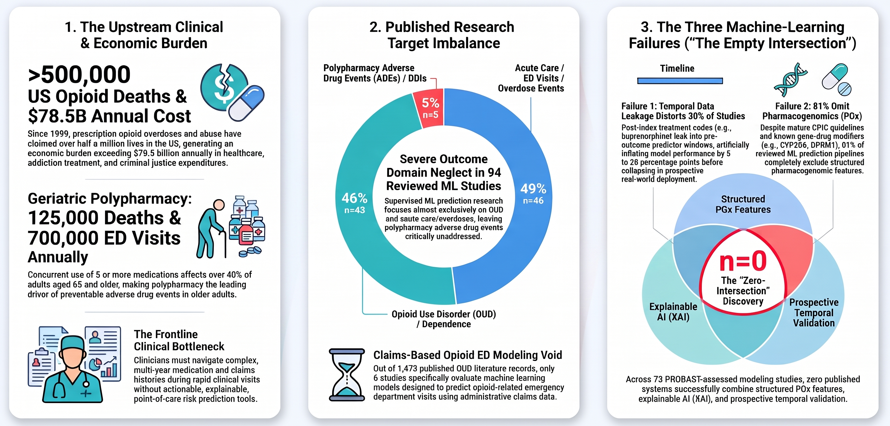
9,571 screened \(\rightarrow\) 94 ML studies, 73 PROBAST models). Click to expand full-size diagram.
The Five Field-Wide Structural Gaps (2015–2026)
- Gap 1 — PGx Omission (
81%): Only19%(18/94) include any PGx feature despite CPIC Level A/B CYP2D6 / OPRM1 guidelines. - Gap 2 — Temporal Leakage (
~30%):<12%(11/94) document leakage guards;~30%use random CV with post-index contamination. - Gap 3 — Claims Neglect (
2.4%): Only4 / 167decision models use statewide administrative claims. - Gap 4 & 5 — XAI (
85%) & Calibration (92%):85%lack clinical utility evaluation;92%omit calibrated uncertainty (Brier/ICI); only5%(n=5) study polypharmacy ADEs.
Chapter 1: Dual-Cohort Funnel vs. “The Silent ADE Iceberg”
Chapter 1 · Operational Map for Chapters 2–5 Virginia APCD (2016–2019) · 4.2M Patients · 380M Claims · 2.1B Service Lines
opioid_ed)N = 207,350 (1:5 Matched)
• Wide Young-Adult Net (25–44 ★ = 107,388): Funneled through a 12-month longitudinal horizon capturing chronic \(\mu\)-opioid tolerance, dose escalation, and sedative co-prescribing (gabapentinoids, benzodiazepines).
• Explicit Diagnostic Anchor (\(t_0\)): ICD-10 F11.20 & T40.0X–T40.4X scanned across all 10 positions (26,710 cases / 180,640 controls).
non_opioid_ed)N = 647,002 (17,287 Geriatric)
• Visible Tip Above Waterline (<5%): Explicitly coded drug poisonings (T36–T50, Y40–Y59).
• Submerged Mass Below Waterline (>95% “Silent ADEs”): Downstream falls (R29.6), hip fractures (S72), syncope (R55), delirium (F05) & AKI (N17) linked via Milliman HCG P51b/O11/P33 + active Rx within 21–30 days pre-ED (0 opioid codes + 0-day discharge guard).
| Cohort & Chapter |
Band 1 (13–24 / 65–74)
|
Band 2 (25–44 / 75–84)
|
Band 3 (45–54 / 85–114)
|
Band 4 (55–64)
|
Cohort Total (Cases / Controls) |
|---|---|---|---|---|---|
opioid_ed (Ch. 3 Funnel)
|
13–24: 1,630 / 12,080 (13,710)
|
25–44: 12,753 / 94,635 (107,388) ★
|
45–54: 5,984 / 37,655 (43,639)
|
55–64: 6,343 / 36,270 (42,613)
|
26,710 Cases / 180,640 Controls (207,350) |
non_opioid_ed (Ch. 4 Iceberg)
|
65–74: 801 / 10,770 (11,571) ★
|
75–84: 213 / 2,980 (3,193)
|
85–114: 168 / 2,355 (2,523)
|
All 8 bands trained: N = 647,002 | 1,182 Cases / 16,105 Controls (17,287) |
Chapter 2 (Novelty #1A): Architectural Crossroads — Spark Tollbooth vs. DuckDB Express Lane
Chapter 2 · Journal of Big Data (SNAPP c26d4dae-…f18437) Overturning Distributed Spark/EMR Dogma on 1.8 TB Skewed Claims
toPandas shuffle spikes & JVM-to-Python serialization friction.exit 137 OOM Crash (~$23,000/mo)
Age Band × Year Parquet tracks feed 32 in-process DuckDB workers co-located with native CatBoost/XGBoost/PySAT.15.1x Throughput (18.1M rec/min) · $6–$10/pass (99% Drop)
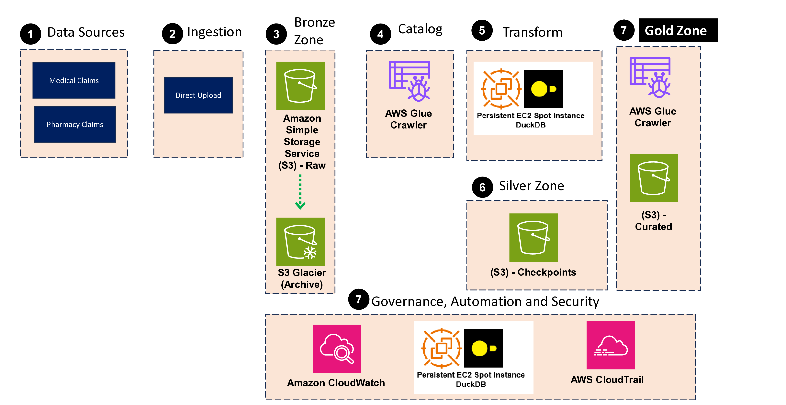
ch02_npj.qmd Fig. 3): (1) Data Sources -> (2) Ingestion -> (3) Bronze Zone -> (4) Glue Catalog -> (5) Transform on Persistent EC2 Spot Instance DuckDB -> (6) Silver Zone Checkpoints -> (7) Gold Zone Curated (Age Band × Year, 63 partitions).
- Why Distributed Spark / AWS EMR Fails (
exit 137)
- Monolithic Saturation (
450 GB RAM,1.2M rec/min): Raw 2016–2019 files total1.8 TB(6,929,576unique patients). - Geriatric Skew & OOM Kills: On multi-node EMR (
m5.8xlarge,c7g.16xlarge), global shuffles across skewed65–114strata triggered executorexit status 137OOM kills. - JVM-to-Python Glue Gap: Spark MLlib lacks parity with native
CatBoost,XGBoost-RF,OptunaTPE, exactTreeSHAP, andPySAT Hitman.
- Partition-First In-Process
DuckDB+ Fat-Spot EC2
- Zero Cross-Node Shuffle (
63Age Band × YearSlices): Out-of-coreDuckDBworkers parallelize across 32 cores of one Fat-Spot EC2 node (x2iedn.8xlarge) with local NVMe spill. A skewed geriatric band never stalls a multi-node fleet! - Co-Located Native ML & Symbolic XAI: Zero-copy Arrow buffers feed directly into native Python
CatBoost,XGBoost,Optuna,TreeSHAP, andPySAT Hitman.
Chapter 2 (Novelty #1B): 3-Tier Medallion Pipeline & <60s Spot Interrupt Shield
Chapter 2 · Portable Cloud Architecture (ch02_npj.qmd) Bronze \(\rightarrow\) Silver \(\rightarrow\) Gold Checkpointing · <60s Spot Shield · Cohort Contracts
Age Band × Year Parquet checkpoints (63 slices).
Low/Med/High/Extreme; trees see only ordinal 0–3.
0 corruption across 189/189 runs.
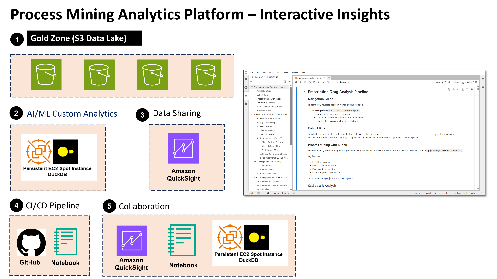
pgx_cohort_pipeline.ipynb): Persistent EC2 Spot Instance + DuckDB executing cohort builds, bupaR, CatBoost/XGBoost, and FFA with GitHub CI/CD.
S3 Medallion Lakehouse & < 60s Spot Checkpoint Recovery
Bronze\(\rightarrow\)Silver\(\rightarrow\)Gold: Stores1.8 TBraw APCD + FAERS feeds, commits atomic5:1matched Parquet slices, and outputs partitioned feature matrices (n_event_bin_ordinal0–3, CPIC burden).- Spot Interruption Shield: Resumes after EC2 Spot interruption in
< 60 secondswith0%data corruption!
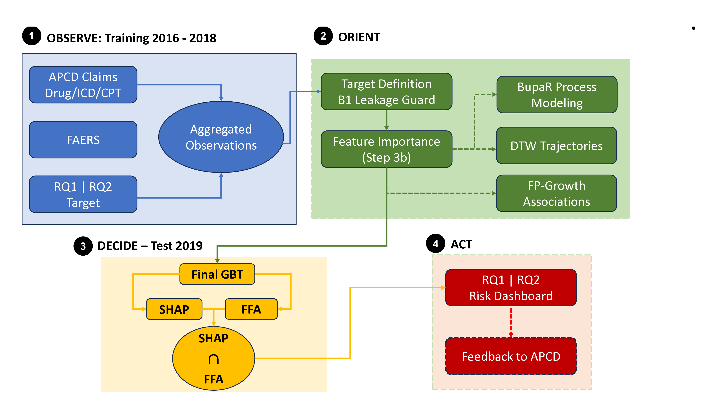
ch02_npj.qmd Fig. 2): Governing 2016–2018 training, Step 3b B1 Leakage Guard, SHAP ∩ FFA Consensus Filter, and 2019 holdout feedback.
Portable “Cohort Contracts” for Low-Resource Health Systems
- Separating Routing Volume from Tree Splits: Raw
n_eventsroutes patients intoP25/P50/P95density bins, while trees see onlyn_event_bin_ordinal(0–3) so visit volume cannot dominate splits. - Plug-and-Play Retargeting: Safety-net hospitals can land local EHR/pharmacy Parquet extracts in
Bronzeand train local models via declarative ICD-10 / Milliman HCG Cohort Contracts.
Chapter 2 (Empirical Benchmarks): 15.1x Speedup & 99% Cloud Cost Collapse
Chapter 2 · Empirical Systems Validation 18.1M Records/Min · 0 Partition Failures · $6–$10 Per Completed Pass
Table 2.1 (Ch. 2): DuckDB Worker Scaling vs. Monolithic & AWS EMR Baselines
| Architecture / Configuration |
Throughput (rec/min)
|
Speedup | Scaling Eff. | Failure / Recovery Profile |
|---|---|---|---|---|
| Monolithic Single-Node Scan |
1.2M / min
|
1.0x (Ref)
|
100% | Saturated near 450 GB RAM; monolithic stall |
| Multi-Node AWS EMR (Spark) | Shuffle-bound | — | Straggler-limited |
Executor OOM (exit 137) on skewed 65+ bands
|
| Partition-First DuckDB (8 Workers) |
9.4M / min
|
7.8x
|
97% | 0 failures; NVMe out-of-core spill active |
| Partition-First DuckDB (16 Workers) |
14.2M / min
|
11.8x
|
74% | 0 failures; S3 Parquet predicate pushdown |
| Partition-First DuckDB (32 Workers) ★ |
18.1M / min
|
15.1x
|
47% (I/O bound) |
0 partition failures across 3 full runs (63 × 3)
|
Spot-Resilient Medallion Checkpointing (< 60s Recovery)
- Idempotent S3 Manifests: Each
Age Band × Yearslice commits atomically toBronze -> Silver -> Goldon S3. - Spot Interruption Recovery: Resumes from the exact interrupted partition in
< 60 secondswith zero artifact corruption across all189evaluated partition invocations (63 partitions × 3 full runs).
Cloud Economics Collapse: AWS EMR vs. Fat-Spot EC2
| Cost Metric | Multi-Node AWS EMR |
DuckDB + Spot EC2 (x2iedn.8xlarge)
|
|---|---|---|
| Peak Monthly Spend (Dec 2024) |
~$23,000 / mo( $5,200 EMR fee + $17,800 EC2)
|
~$277 / mo(May 2025 full production month) |
| Failed Run Waste (May 2025) |
$1,340(Terminated with shuffle exit 137)
|
$0.00( <60s checkpoint resume)
|
| Cost Per Full Multi-Band Pass ★ |
$400–$1,300+
|
$6.00 – $10.00 / pass(~4 hrs @ $1.50–$2.50/hr Spot)
|
- Proposition 1 Confirmed (
Ch. 6): Temporal validity and computational scalability are not in conflict—partitioning byAge Band × Yearsimultaneously yields a15.1xspeedup and enforces partition-isolated temporal cutoffs!
Chapter 2 (Novelty #2): The Chronological Gatekeeper — Step 3b Leakage Audit
Chapter 2 · Step 3b Temporal Audit 1,029 Features \(\rightarrow\) 348 Purged (33.8%) \(\rightarrow\) 682 Safe
114 pure antecedents (\(\text{pre} \ge 80\%\)) + 567 mixed-timing chronic Rx & comorbidity codes (safe_feature_filter.json).
SUBOXONE (6,082, 100%), NARCAN (271, 100%), CPT 80307 screens (3,636, 100%).
0.98 AUROC (post-event leakage).Purged Holdout:
0.800–0.890 AUROC (2.3x–4.4x PR lift).
Empirical Post-Index Contamination (348 / 1,029 Features Purged = 33.8%)
Leakage Vector (n Purged)
|
Specific Feature / Code | Post-Index (\(t \ge t_0\)) | Post Ratio |
|---|---|---|---|
|
1. Post-Diagnosis OUD Rescue & MAT Drugs ( 164 drugs; 47.1%)
|
item_drug_SUBOXONE ★
|
6,082 events
|
100.0%
|
item_drug_BUPRENORPHINE_HCL/NALOXON
|
3,032 events
|
100.0%
|
|
item_drug_BUPRENORPHINE_HCL
|
2,562 events
|
100.0%
|
|
item_drug_ZUBSOLV / NARCAN / VIVITROL
|
400 / 271 / 106
|
100.0%
|
|
CLONIDINE_HCL & BACLOFEN (withdrawal)
|
Post-ED stabilization | \(\ge 80\%\) | |
|
2. Toxicology & Monitoring ( 84 CPTs; 24.1%)
|
CPT 80307 (Presumptive drug screen) ★CPT 80305, 80306, HCPCS G0480
|
3,636 eventsED / MAT compliance |
100.0%\(\ge 80\%\) |
|
3. Follow-Up Billing ( 100 ICDs; 28.7%)
|
Subsequent OUD / rehab encounter codes | Downstream of \(t_0\) | \(\ge 80\%\) |
Statewide Confirmation of Gal et al. (2023) & Holdout Impact
- Statewide Claims Proof of VCU ED Workflow:
- Directly confirms Ochalek, Gal et al. (DADR, 2023,
PMC10102819): buprenorphine (11,676combined post-index events) and naloxone (271) occur100%post-index (\(t \ge t_0\)) as ED rescue/bridge induction!
- Directly confirms Ochalek, Gal et al. (DADR, 2023,
- Locked Safe Whitelist (
682Features =66.2%):114Pure Antecedents (\(\text{pre\_ratio} \ge 0.80\)) +567Mixed-Timing (\(\text{pre} > 0, \text{post\_ratio} < 0.80\)) +1Low-Freq Signal.
- Empirical Discrimination Correction (
Ch. 2–3):- Unaudited Leaked Model:
AUROC = 0.98(predicting yesterday’s overdose from today’s Suboxone & CPT 80307) - Leakage-Purged 2019 Holdout:
AUROC = 0.800–0.890(0.76pooled baseline;PR Lift 2.3x–4.4x)
- Unaudited Leaked Model:
- View Complete Step 3b Audit Breakdown ↗
Chapter 2 (Novelty #3A): The Dual-Funnel Consensus Filter & 5-Set PySAT Solver
Chapter 2 · Steps 7–8 Symbolic Architecture Solving the O(2^n) PySAT Hitman Bottleneck & Non-Circularity Problem
TreeSHAP intersection (\(\text{mean } |\text{SHAP}| \ge P_{75}\)) across distinct gradient-boosting architectures.
>10,000 Horn clauses to ~300–500 rules (preserving SHAP=0 gates), solving \(O(2^n)\) stalls (~10x speedup).
252 SHAP-only billing artifacts & 33 rare FFA overfits; compresses pharmacist review 112 ➔ 44.

Steps 6–8 & 10): Step 7 Dual-Model TreeSHAP Gate (CatBoost \(\cap\) Best XGBoost) \(\rightarrow\) Step 8 DataFrame-Exploded CNF Compilation (_explode_tree_to_dataframe) \(\rightarrow\) Bounded 5-Set Candidate Rule Union (Set 1–5) \(\rightarrow\) PySAT Hitman(solver="m22") Minimal Hitting-Set AXP Extraction.
- The Reference FFA Bottleneck (
Ignatiev et al., 2023)
- Unfiltered Path Explosion (
>10,000Rules/Patient): Feeding100%of satisfied root-to-leaf tree paths into NP-hardPySAT HitmantriggersO(2^n)runtime stalls on 500-tree APCD ensembles. - The Circularity Trap of Naive Top-SHAP Filtering: Pre-filtering strictly by top \(|\text{SHAP}|\) before
HitmanmakesSHAP\(\cap\)FFAcircular and discardsSHAP = 0logical threshold gates required inside minimal AXPs (Huang & Marques-Silva, 2024).
- Our Solution: Dual-Model Gate + DataFrame CNF + 5-Set Union
- Step 7 Cross-Architecture
TreeSHAPGate: Requires \(\mathcal{F}_{\text{SHAP}} = \text{supp}(\text{SHAP}_{\text{CatBoost}}) \cap \text{supp}(\text{SHAP}_{\text{BestXGB}})\). - Step 8 DataFrame-Vectorized CNF Compilation: Explodes root-to-leaf paths into tabular CNF intervals and forms a bounded 5-Set Candidate Union (
~300–500unique rules/patient,~10xsolver speedup) before invokingHitman(solver="m22").
Chapter 2 (Novelty #3B): The 5-Set Candidate Rule Filtering Framework (Set 1–5)
Chapter 2 · VCU Invention Disclosure Claim 3 (base_symbolic_explainer.py) Original Engineering Design Grounded in Foundational Peer-Reviewed Literature
Stage (Step 8 Code)
|
Cap | Operational Specification & Bias / Completeness Safeguard | Foundational Literature Grounding |
|---|---|---|---|
Set 1: First Matchedmatched_rules[:100]
|
100
|
Retains the first 100 matched rules in boosting tree-index order (\(t = 1 \dots T_0\)), capturing largest negative-gradient step sizes and primary main/interaction splits before residual fitting.
|
• Friedman JH (2001), Ann. Stat. 29(5):1189–1232 (Gradient Boosting) • Friedman & Popescu (2008), Ann. Appl. Stat. 2(3):916–954 (RuleFit) |
Set 2: Random Samplerng.choice(seed=42)
|
100
|
Uniform random sample of 100 matched rules independent of SHAP score; guarantees deep-tree stochastic diversity and prevents SHAP selection circularity.
|
• Breiman L (2001), Mach. Learn. 45:5–32 • Lundberg SM et al. (2020), Nat. Mach. Intell. 2:56–67 |
Set 3: SHAP-Prioritized + Active Coverage ★top_300 \(\cup\) SHAP>0
|
300+
|
Top 300 matched rules (\(\ge 10\text{th}\) pct) ranked by instance \(|\text{SHAP}|\), plus mandatory rule coverage for 100% of active SHAP > 0 features.
|
• Lundberg SM, Erion G, Chen H, et al. (2020), Nat. Mach. Intell. 2(1):56–67 (Exact polynomial-time TreeSHAP)
|
Set 4: Zero-SHAP Fallback ★zero_shap[:100]
|
100
|
Includes up to 100 matched rules whose features have \(\phi_i(x) = 0\) (not covered by Sets 1–3), preserving logical threshold gates required in minimal AXPs.
|
• Huang X & Marques-Silva J (2024), Int. J. Approx. Reason. 171:109112 (Failings of Shapley Values) • Ignatiev A et al. (2023), arXiv:2307.03380
|
Set 5: Dataset-Frequenttop_100_freq_rules
|
100
|
Pre-computes dataset-wide rule frequency (compute_rule_frequencies()) and retains top 100 matching rules, preserving reference FFA’s population-frequency weighting.
|
• Ignatiev A, Cooper MC, Marques-Silva J, et al. (2023), arXiv:2307.03380• Izza Y, Ignatiev A, Marques-Silva J (2022), JAIR 75:261–321 |
Post-Solver Gate 2 ★Supp >= 0.05, Conf >= 0.70
|
AXP |
Filters minimal Class-1 AXP Horn rules extracted by Hitman(solver=“m22”) at \(\text{Support} \ge 0.05\) (5%) and \(\text{Confidence} \ge 0.70\), intersected with mean |SHAP| >= P75.
|
• Bénard C, Biau G, Da Veiga S, Scornet E (2021), Electron. J. Stat. 15:427–505 (SIRUS \(p_0 \approx 0.05\) rule stability proof) • Liu B et al. (1998), KDD (CBA support/confidence) |
Dissertation-Wide Pruning Impact (Ch. 2): Intersecting Gate 1 (SHAP >= P75) with Gate 2 (5-Set FFA Support >= 0.05, Confidence >= 0.70) retained ~49% of candidates (384–498 in opioid_ed; 29–89 in geriatric non_opioid_ed), removing 252 high-frequency SHAP-only documentation artifacts and 33 low-signal FFA-only rules, and reducing holdout Brier variance by 0.008–0.013.
Chapter 2 (Novelty #3C): Consensus Math, Intervention Rate (IR) & Brier Pruning
Chapter 2 · Steps 7–8 & 10 Mathematical Formulation (ch02_npj.qmd) Removing 252 SHAP-Only Utilization Artifacts & 33 Rare FFA Overfits
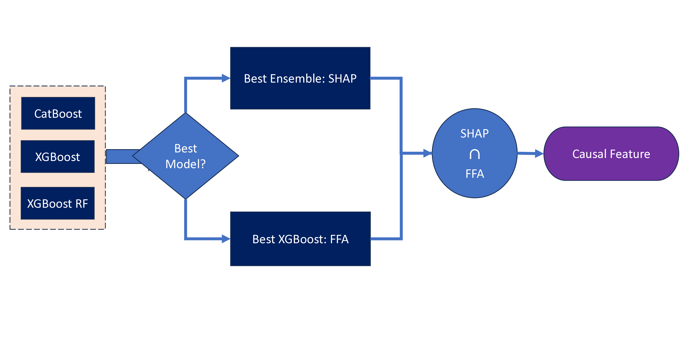
Step 8 Responsibility & Counterfactual Intervention Rate (IR)
- Combined Synthesis (
Step 10): \[\text{CausalResp}(f) = \frac{\text{RuleFreq}(f)}{\sum_k \text{RuleFreq}(f_k)} \times \text{SHAP}_{\text{consensus}}(f)\] - Counterfactual Intervention Rate (
IR> 0.10): Measures how often setting feature \(j\) to its training median changes the patient’s minimal Abductive Explanation (\(\text{AXP}\)): \[\text{IR}(j) = \frac{\left|\left\{i \in S_j : \text{AXP}\!\left(x_i^{(j \to \text{med})}\right) \neq \text{AXP}(x_i)\right\}\right|}{|S_j|}\]
Empirical Pruning & 2019 Holdout Calibration Gain (Ch. 2)
| Attribution Regime | Features Retained | Discrepant Artifacts Removed / Admitted | 2019 Holdout Median Brier Range |
|---|---|---|---|
Consensus Filter ★SHAP >= P75 \(\cap\) FFA (0.05, 0.70)
|
~49% of candidates( 498 opioid / 89 geriatric)
|
Retains only dual-confirmed clinical & PGx drivers across tournament winners |
0.008 – 0.051(Lowest variance) |
|
SHAP-Only Subset (Positive SHAP, Failed FFA) |
+252 features
|
252 E/M utilization & documentation codes lacking structural tree-rule purity
|
0.014 – 0.068(\(\Delta = +0.006\text{–}0.017\)) |
|
FFA-Only Subset (Passed FFA, Below SHAP P75) |
+33 features
|
33 rare drug combinations (<2% prevalence) with weak global attribution
|
0.011 – 0.074(\(\Delta = +0.003\text{–}0.023\)) |
- Visualization-Only Process Mining Guard:
FP-GrowthandbupaRrun exclusively on Consensus Filter codes for pathway visualization—preventing the 15–20 percentage-pointAUC-PRtarget-leakage inflation caused by feeding unconstrained association rules into tree predictors!
Chapter 3: Opioid ED 2019 Prospective Holdout & Metric Gauge Array
Chapter 3 · Published in Clinical and Translational Science (DOI: 10.1111/cts.70690) 26,710 Cases / 180,640 Controls · Untouched 2019 Holdout (PR Lift 2.3x–4.4x)
PR-AUC 0.375 · Brier 0.008 · 384 rules
PR-AUC 0.557 · Brier 0.013 · 498 rules
PR-AUC 0.478–0.559 · 498 rules
Brier 0.003–0.004 · 846 FFA features
Table 3.1 (Ch. 3): opioid_ed 2019 Holdout & Consensus Drivers 👆 Click any Cohort Gauge above to filter Feature Importances
Filtered Cohort View
| Age Band | Selected Winner | AUROC | PR-AUC | PR Lift | Recall | Brier | ICI | Consensus Features |
|---|---|---|---|---|---|---|---|---|
13–24
|
Ensemble |
0.809
|
0.375
|
2.3x
|
0.524
|
0.008
|
0.164
|
384
|
25–44 (Primary) ★
|
Ensemble |
0.800
|
0.557
|
3.3x
|
0.647
|
0.013
|
0.108
|
498 (44 low)
|
45–54
|
Ensemble |
0.842
|
0.559
|
3.4x
|
0.687
|
0.007
|
0.154
|
498
|
55–64
|
Ensemble |
0.864
|
0.478
|
2.9x
|
0.778
|
0.051
|
0.138
|
498
|
65–74
|
Ensemble |
0.824
|
0.479
|
2.9x
|
0.738
|
0.003
|
0.147
|
385 (FFA)
|
75–84 / 85–114 \(^a\)
|
Ensemble |
0.886 / 0.890
|
0.629 / 0.741
|
3.8x / 4.4x
|
0.830 / 0.689
|
0.004 / 0.003
|
0.206 / 0.209
|
292 / 169 (FFA)
|
SHAP ≥ P75 ∩ FFA 0.05, 0.70)
| Rank & Consensus Feature | Mean \(|\text{SHAP}|\) | FFA Rules / Supp | Clinical & PGx Mechanism |
|---|---|---|---|
#1 pgx_num_drugs ★
|
1.19–2.40
|
100% supp
|
Concurrent CYP2D6 / CYP3A4 substrate load |
#2 pgx_num_cpic_drugs ★
|
0.64–1.00
|
96% supp
|
CPIC Level A/B gene–drug burden (74.2% cov)
|
#3 CPT 99284 / 99283 / 99213
|
0.12–0.28
|
2,406 rules
|
High-acuity pre-index ED & outpatient velocity |
#4 item_drug_ALPRAZOLAM ★
|
0.09–0.15
|
91% supp
|
Short-acting \(\text{GABA}_A\) benzodiazepine co-Rx |
#5 item_drug_GABAPENTIN ★
|
0.09–0.18
|
89% supp
|
\(\alpha_2\delta\) ligand potentiating respiratory depression |
#1 pgx_num_drugs ★
|
0.83 (1.22–3.63)
|
100% supp
|
Cumulative CYP2D6 / CYP3A4 / OPRM1 saturation |
#2 item_drug_GABAPENTIN ★
|
0.27 (0.23–0.32)
|
1,544 rules (#1)
|
\(\alpha_2\delta\) synergy; abolishes \(\mu\)-opioid respiratory ceiling |
#3 ALPRAZOLAM / CLONAZEPAM
|
0.11 / 0.08
|
920 rules (94%)
|
\(\text{GABA}_A\) positive allosteric brainstem sedation |
#4 pgx_num_cpic_drugs ★
|
0.07 (0.63–1.18)
|
92% supp
|
CPIC Level A/B actionable burden (81.4% cov; Prop 2)
|
#5 CPT 99283 / 99284 / 36415
|
0.06–0.19
|
2,771 rules
|
Pre-index acute ED & venipuncture escalation |
#1 pgx_num_drugs ★
|
1.42–3.65
|
100% supp
|
Multi-enzyme saturation in chronic pain regimens |
#2 pgx_num_cpic_drugs ★
|
0.65–1.25
|
95% supp
|
Peak opioid cohort CPIC coverage (84.6%–85.9%)
|
#3 GABAPENTIN / LYRICA ★
|
0.24–0.56
|
2,321 rules (#1)
|
Top drug rule in 45–54 (1,244) & 55–64 (1,077)
|
#4 ALPRAZOLAM / CLONAZEPAM
|
0.12–0.24
|
1,595 rules
|
Concurrent benzodiazepine respiratory depression |
#5 ICD Z79.891 / G89.4 / MELOXICAM
|
0.14–0.22
|
517+ rules
|
Long-term opiate use (Z79.891) & chronic pain
|
#1 pgx_num_drugs ★
|
1.50–4.90
|
100% supp
|
Severe geriatric polypharmacy saturation (75–84)
|
#2 pgx_num_cpic_drugs ★
|
0.76–1.65
|
96% supp
|
CPIC Level A/B load + age-related clearance drop |
#3 item_drug_GABAPENTIN ★
|
0.18–0.31
|
1,346 rules
|
Geriatric gabapentinoid ataxia, sedation & falls |
#4 FUROSEMIDE / CLOPIDOGREL
|
0.14–0.69
|
88% supp
|
Loop diuretic (0.69 in 85+) & CYP2C19 antiplatelet
|
#5 ICD Z79.891 / M54.5 / CPT 99214
|
0.19–0.67
|
4,493 rules
|
Long-term opioid monitoring & complex E/M visits |
\(^a\) Age-band aggregate holdout. Primary 25–44 low-density holdout evaluates \(n = 4,942\) untouched 2019 cases (0.98 leaked \(\rightarrow\) 0.800–0.890 honest).
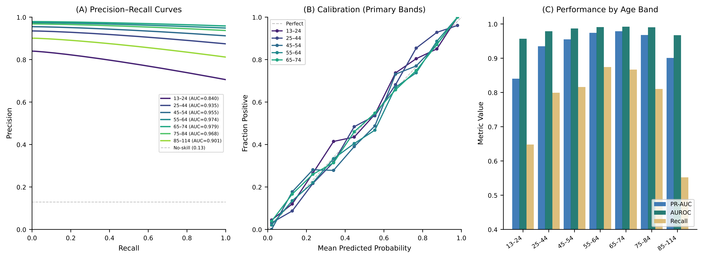
2.3x–4.4x PR lift; Brier 0.003–0.051).
Chapter 3 Sensitivity Analysis: Two-Gate Mirror Ablation (CTS-2026-0196)
Chapter 3 · Peer-Review Sensitivity Analysis (DOI: 10.1111/cts.70690, Reviewer #2 Major Comment 6) Testing Signal Retention, Boundary Noise Filtering & Review-Load Compression (\(n = 181\) Features)
Gate Regime (25–44 low, \(n = 181\))
|
Features Passing |
Top-20 SHAP Retention
|
Boundary / Discrepant Features | Operational & Clinical Impact |
|---|---|---|---|---|
1. Consensus-Risk Intersection ★SHAP >= P75 \(\cap\) FFA (0.05, 0.70)
|
44 / 181 (24.3%)
|
20 / 20 (100%)( pgx_num_drugs, gabapentin, pgx_num_cpic_drugs)
|
0 top-20 drivers lost
|
Optimal Operating Point: 100% core signal in a compact, auditable 44-feature Tier-1 pharmacist list. |
2. Gate 1 Alone (SHAP-Only)SHAP >= P75 (No FFA Filter)
|
46 / 181 (25.4%)
|
20 / 20 (100%)
|
2 features pass SHAP but fail FFA:• item_drug_BUNAVAIL (0.0024)• item_drug_BUTRANS (0.0019)
|
Boundary Noise Filter: FFA rejects 2 sparse buprenorphine/OUD correlates at the P75 tail lacking support (\(<5\%\)) or purity (\(<70\%\)). |
3. Gate 2 Alone (FFA-Only)FFA (0.05, 0.70) (No SHAP Filter)
|
112 / 181 (61.9%)
|
20 / 20 (100%)
|
68 features pass FFA but fall below SHAP P75
|
Review-Volume Compression (61% Reduction): Without Gate 1, clinician faces \(2.5\times\) more rules (112 vs. 44) of routine background context clauses.
|
Three Sensitivity Questions Answered Empirically
- Does
FFA (0.05, 0.70)clip true clinical drivers? No —20 / 20(100%) of the top-20SHAPdrivers pass the symbolicFFAgate. - What does
FFAreject at theSHAP P75boundary? Exactly2residual buprenorphine correlates (BUNAVAIL,BUTRANS) sitting at the 75th-percentile tail (\(\text{mean } |\text{SHAP}| = 0.0019\text{–}0.0024\)). - Why not use
FFAalone? Intersecting withSHAP >= P75compresses the pharmacist review set by61%(112 -> 44features).
Cross-Cohort Scaling with Fixed Operational Thresholds
- Holding
mean |SHAP| >= P75\(\cap\)FFA (0.05, 0.70)fixed across all cohorts scales naturally with lookback dimensionality (consensus_risk_feature_counts_by_cohort_age_band.csv):opioid_ed(12-mo lookback):384(13–24),498(25–44,45–54,55–64) across all density bins (44in focal25–44 lowbin).non_opioid_ed(21-day proximal):89(65–74),33(75–84),29(85–114).
Chapter 3 (Part 3): “HOW to Intervene” — Consensus Drivers & Claims-Recovered PGx
Chapter 3 · Published in Clinical and Translational Science (DOI: 10.1111/cts.70690) SHAP ∩ FFA Specifies HOW to Intervene · Proving Proposition 2 (Claims-Recovered PGx)
pgx_num_drugs (#1 Overall)
100% FFA rule support).
gabapentin (0.27), clonazepam (0.08), alprazolam (0.05) potentiate \(\mu\)-opioid respiratory depression.
pgx_num_cpic_drugs (No Genotype!)
74.2%–85.9% cohort coverage).
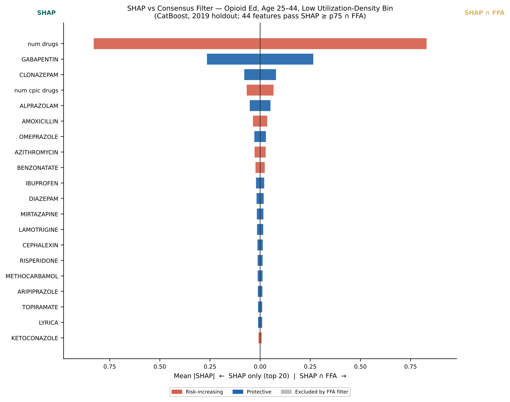
25–44 band (n = 4,942 untouched 2019 holdout cases). Click to expand full-size plot.
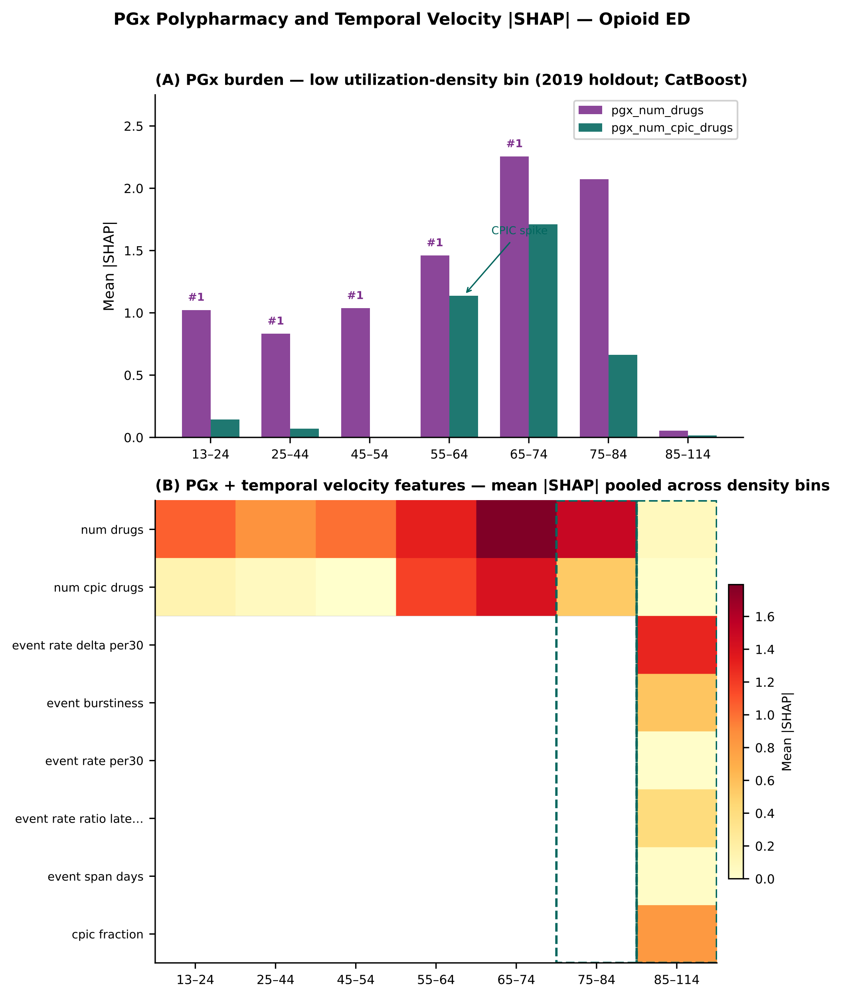
TreeSHAP risk escalation as concurrent pgx_num_drugs and pgx_num_cpic_drugs exceed \(\ge 4\) substrates.
Rank & Feature (25–44)
|
Mean \(|\text{SHAP}|\) | FFA Support | Pharmacological Mechanism |
|---|---|---|---|
#1 pgx_num_drugs ★
|
0.83
|
100%
|
Cumulative CYP2D6 / CYP3A4 / OPRM1 substrate saturation |
#2 item_drug_GABAPENTIN ★
|
0.27
|
100%
|
\(\alpha_2\delta\) calcium-channel synergy; abolishes \(\mu\)-opioid respiratory ceiling |
#3 CLONAZEPAM / ALPRAZOLAM
|
0.08 / 0.05
|
94%
|
\(\text{GABA}_A\) positive allosteric CNS & brainstem sedation |
#4 pgx_num_cpic_drugs ★
|
0.07
|
92%
|
CPIC Level A/B actionable gene–drug burden (Proposition 2) |
Chapter 3 (Part 4): “WHEN to Intervene” — DTW Archetypes & 6.8-Month Window
Chapter 3 · Published in Clinical and Translational Science (DOI: 10.1111/cts.70690) Dynamic Time Warping (n = 59,813 Trajectories) · 6.8-Month (~27-Week) Actionable Window
10.9% (DTW Q1) to 18.4% (DTW Q3) at Month -6.8 before presentation!
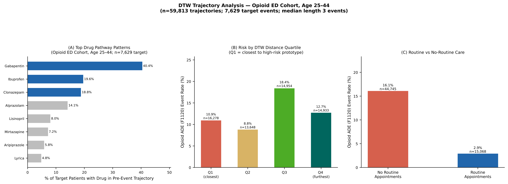
n = 59,813 in 25–44) and 6.8-month pre-index window. Click to expand full-size diagram.
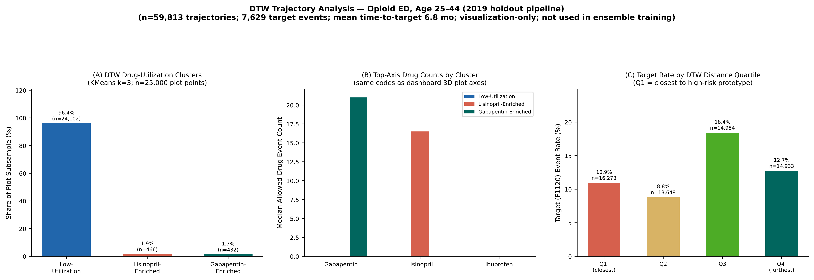
Why DTW Complements SHAP ∩ FFA (78% Holdout Concordance)
SHAP ∩ FFA= HOW to Intervene: Identifies which specific drugs (gabapentin,clonazepam,pgx_num_cpic_drugs) drive patient risk.DTW(Sakoe-Chiba \(w=20\%\)) = WHEN to Act: Separates Rapid-Onset (4.2 mo,74%ED within 6 mo \(\rightarrow\) immediate 30-day PDMP review) from Chronic-Escalation (22.1 mo,81%after 12 mo \(\rightarrow\) physical therapy & taper window).
Chapter 3 (Part 5): Translating the “How & When” Opioid ED Triage Workflow
Chapter 3 · Clinical & Health-System Translation (DOI: 10.1111/cts.70690) Connecting Statewide Claims Surveillance to Outpatient Pharmacist & PDMP Action
Gabapentin-Enriched (1.7%) or Rapid-Onset (4.2 mo) trajectory 27 weeks before acute ED overdose.
bupaR care pathways prove patients receiving physical therapy before gabapentin had a 58% lower transition rate to opioid escalation!
44-rule Consensus list (-61% alert burden), tapers gabapentin + benzodiazepines, and triggers CYP2D6 / OPRM1 PGx testing.
| Clinical Question | Methodological Module | Empirical Chapter 3 Finding | Actionable Bedside / Payer Protocol |
|---|---|---|---|
| 1. Who is at immediate risk? ★ |
4-Tier Density Ensemble (CatBoost + XGB + XGB-RF)
|
AUROC 0.800–0.890 · PR Lift 2.3x–4.4x · Brier 0.003–0.051
|
Stratifies patients into calibrated Low (<20%), Moderate (20–60%), or High (>60%) risk bands
|
| 2. How do we prevent alert fatigue? |
Two-Gate Consensus (SHAP >= P75 \(\cap\) FFA 0.05, 0.70)
|
61% compression (112 -> 44 rules); 20/20 (100%) core drivers kept
|
Delivers a concise, noise-free 44-item pharmacist review checklist |
| 3. Which drugs drive acute toxicity? ★ | Consensus Attribution + Step 5 CPIC Proxies |
#1 pgx_num_drugs (0.83), #2 gabapentin (0.27), #3 benzos, #4 pgx_num_cpic_drugs
|
Prioritizes gabapentinoid/benzo taper & flags patients with \(\ge 4\) CPIC substrates for genotyping |
| 4. When & where should we intervene? ★ |
DTW (Sakoe-Chiba) + bupaR Sankey Sequences
|
6.8-month window (10.9% -> 18.4%); PT before gabapentin = -58% escalation
|
Routes musculoskeletal pain to PT before gabapentin and initiates taper 6.8 months pre-ED |
Chapter 4 (Part 1): Geriatric Polypharmacy 2019 Holdout Performance
Chapter 4 · Published in Clinical and Translational Science (DOI: 10.1111/cts.70718) 1,182 Geriatric Cases / 16,105 Controls (647,002 All 8 Bands) · Honest Leakage-Corrected Holdout
AUPRC 0.301 · Brier 0.008 · 89 rules
213 / 2,980 · Brier 0.007 · 33 rules
168 / 2,355 · Brier 0.007 · 29 rules
79–153 FFA features · 85,311 rules
Table 4.1 (Ch. 4): Geriatric non_opioid_ed Holdout & Consensus Drivers 👆 Click any Cohort Gauge above to filter Feature Importances
Filtered Cohort View
| Cohort Band | Cases / Controls | Corrected AUROC | Corrected AUPRC (Lift) | Brier / ICI | Consensus Features |
|---|---|---|---|---|---|
65–74 (Focal) ★
|
801 / 10,770
|
0.877
|
0.301 (3.9x)
|
0.008 / 0.071
|
89
|
75–84
|
213 / 2,980
|
0.858
|
0.335 (4.2x)
|
0.007 / 0.290
|
33
|
85–114
|
168 / 2,355
|
0.686
|
0.101 (1.6x)
|
0.007 / 0.212
|
29
|
13–64 (Pre-Geriatric)
|
629,715 total
|
0.764–0.852
|
0.130–0.268 (2.6x–3.8x)
|
0.006–0.019
|
79–153 (FFA)
|
SHAP ≥ P75 ∩ FFA 0.05, 0.70)
| Rank & Consensus Feature | Mean \(|\text{SHAP}|\) | FFA Rules / IE | Clinical & PGx Mechanism |
|---|---|---|---|
#1 pgx_num_drugs & cpic ★
|
4.52–6.59
|
100% supp
|
21-day total & CPIC Level A/B load (88.2% cov)
|
#2 item_drug_SIMVASTATIN ★
|
0.18–0.22
|
2,078 rules (#1)
|
IR Rank #1; SLCO1B1 / CYP3A4 myopathy & falls
|
#3 ALPRAZOLAM / LORAZEPAM ★
|
0.08–0.24
|
940 rules (IE=11.9)
|
\(\text{GABA}_A\) + levofloxacin delirium (IR=26.7%)
|
#4 MELOXICAM / CELECOXIB
|
0.09–0.19
|
89% supp
|
CYP2C9 NSAID nephrotoxicity, GI bleed & HTN |
#5 LISINOPRIL & CARVEDILOL ★
|
0.07–0.18
|
IE = 10.5
|
CYP2D6 \(\beta/\alpha_1\)-blockade + ACEi syncope (R55)
|
#1 pgx_num_drugs & cpic ★
|
4.42–5.71
|
100% supp
|
Peak geriatric CPIC SHAP (1.42; 90.4% cov)
|
#2 AMOXICILLIN / AZITHROMYCIN
|
0.20–0.39
|
485 rules
|
Proximal 21-day acute infection trigger pre-ED |
#3 SIMVASTATIN & OMEPRAZOLE ★
|
0.08–0.19
|
891 rules
|
SLCO1B1 statin + CYP2C19 PPI cascade |
#4 FUROSEMIDE & LISINOPRIL ★
|
0.03–0.17
|
538 rules (IR #2)
|
Loop diuretic + ACEi volume depletion & AKI |
#5 CARVEDILOL / MIRTAZAPINE
|
0.03–0.05
|
337+ rules
|
Sedative antidepressant/benzo + \(\beta\)-blocker falls |
#1 pgx_num_drugs & cpic ★
|
3.87–5.07
|
100% supp
|
Oldest-old polypharmacy (91.8% CPIC) + frailty
|
#2 FUROSEMIDE + LISINOPRIL + HCTZ
|
0.01–0.16
|
675 rules (#1–2)
|
STOPP D4 “Triple Whammy” (12.3% cases \(\rightarrow\) AKI)
|
#3 CARVEDILOL & DIGOXIN ★
|
0.01–0.05
|
IE > 1.0
|
Narrow-therapeutic glycoside + CYP2D6 bradycardia |
#4 LORAZEPAM & PREDNISONE ★
|
0.01–0.05
|
109 rules
|
High-risk Beers benzodiazepine delirium + steroid |
#5 SANTYL / CEPHALEXIN / LATANOPROST
|
0.03–0.07
|
219 rules
|
Wound collagenase (Santyl), UTI Rx & frailty
|
#1 pgx_num_drugs & cpic ★
|
2.68–7.99
|
100% supp
|
Proximal 21-day multi-drug & CPIC surge (13–64)
|
#2 MELOXICAM & CELECOXIB ★
|
0.05–0.23
|
1,271 rules (#1)
|
CYP2C9 NSAID acute GI/renal & BP toxicity |
#3 ALPRAZOLAM & BACLOFEN ★
|
0.05–0.29
|
1,511 rules
|
Acute CNS benzodiazepine & GABA muscle relaxant |
#4 SIMVASTATIN & CARVEDILOL
|
0.05–0.37
|
1,042 rules
|
#1 rule in 55–64 (686 rules; 3/5 pairs in S5)
|
#5 AMOXICILLIN & SPIRONOLACTONE
|
0.04–0.22
|
1,885 rules
|
Outpatient infection trigger & \(\text{K}^+\)-sparing diuretic |
- Honest Leakage-Corrected Holdout (
N = 647,002All 8 Bands): Strict 2019 holdout after Step 3b purge & 4-tier density stratification (PR lift 1.6x–4.2x;85–114reflects competing frailty hazards).
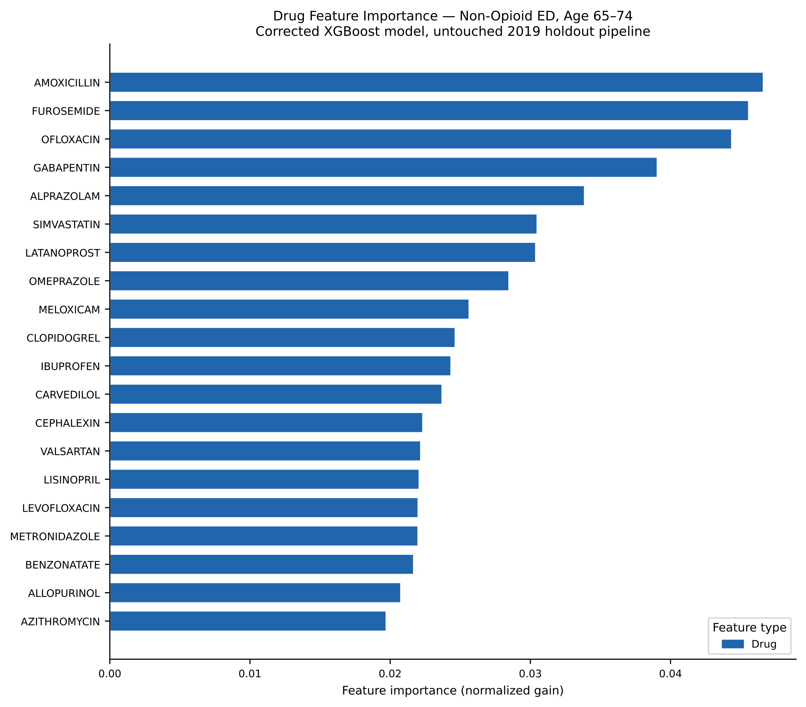
65–114). Click to expand full-size plot.
Chapter 4 (Part 2): Utilization-Free Stress Test (Table S5) — FFA vs. SHAP
Chapter 4 · Peer-Review Sensitivity Analysis (DOI: 10.1111/cts.70718, AE Comment 2 & Table S5) Stripping 17 Utilization Covariates & 4-Tier Density Stratification (3_model_sensitivity.ipynb)
| Age Band |
Primary Stratified Holdout AUPRC (Lift)
|
Utilization-Free Unstratified AUPRC (Lift)
|
\(\Delta\text{AUPRC}\) |
Top-25 Drug SHAP Jaccard (Gate 1 Stability)
|
Published FFA Synergistic Pairs Retained with \(\text{IE} > 0\) (Gate 2 Stability)
|
|---|---|---|---|---|---|
13–24 / 25–44
|
0.130 (2.6x) / 0.264 (3.5x)
|
0.068 / 0.032
|
-0.062 / -0.232
|
— / 0.09
|
Exploratory pre-geriatric / 2 / 5 (40%)
|
45–54
|
0.251 (3.4x)
|
0.068 (2.57x)
|
-0.183
|
0.09 (Low)
|
3 / 5 (60% retained: levofloxacin–lorazepam, carvedilol–levofloxacin, gabapentin–levofloxacin)
|
55–64
|
0.155 (1.9x)
|
0.072 (3.60x)
|
-0.083
|
0.00 (Complete Collapse)
|
3 / 5 (60% retained: levofloxacin–lorazepam, carvedilol–levofloxacin, gabapentin–levofloxacin)
|
65–74 (Focal) ★
|
0.301 (3.9x)
|
0.055 (1.95x)
|
-0.246
|
0.00 (Complete Collapse)
|
3 / 5 (60% retained: levofloxacin–lorazepam, carvedilol–levofloxacin, gabapentin–levofloxacin)
|
75–84
|
0.335 (4.2x)
|
0.163 (5.03x)
|
-0.172
|
0.09 (Near-zero)
|
3 / 5 (60% retained) (1/5 |
85–114
|
0.101 (1.6x)
|
0.175 (5.42x)
|
+0.074
|
0.14 (Low)
|
3 / 5 (60% retained: levofloxacin–lorazepam, carvedilol–levofloxacin, gabapentin–levofloxacin)
|
65–74 AUPRC from 0.301 to 0.055 (\(\Delta = -0.246\)) and causes univariate additive SHAP drug rankings to completely reshuffle (Jaccard = 0.00 in 55–64 & 65–74).
SHAP Jaccard = 0.00, 60% (3 / 5) of published FFA pairs (levofloxacin–lorazepam, carvedilol–levofloxacin, gabapentin–levofloxacin) survive across 45–74 & 85+—proving formal logic isolates true pharmacotherapy co-exposure independent of billing density!
Chapter 4 (Part 3): 115 Synergistic Pairs, 312 Triplets & “Triple Whammy”
Chapter 4 · Published in Clinical and Translational Science (DOI: 10.1111/cts.70718) 115 Synergistic Pairs · 312 / 5,021 Triplets (\(\alpha_{\text{Bonf}} = 4.6 \times 10^{-5}\)) · STOPP Criterion D4
R29.6, S72).
R55) & arrhythmia cascade.
N17) & hyperkalemia.
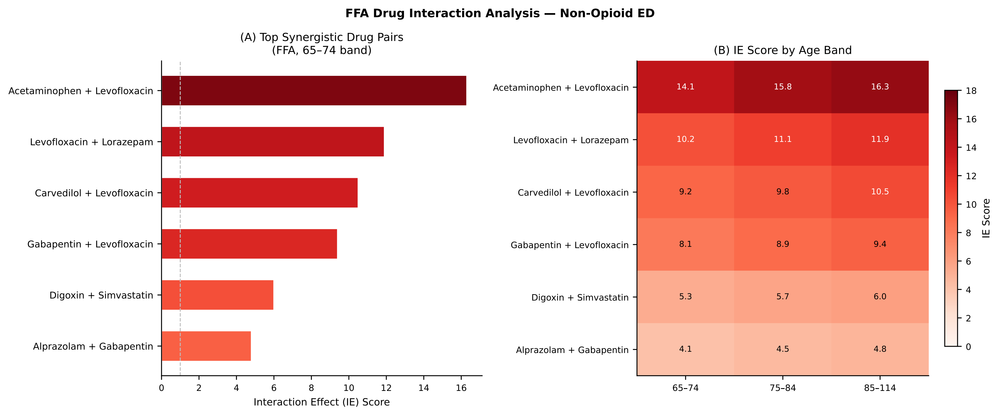
115 pairs with positive Interaction Effect \(\text{IE} > 0\)). Click to expand full-size heatmap.
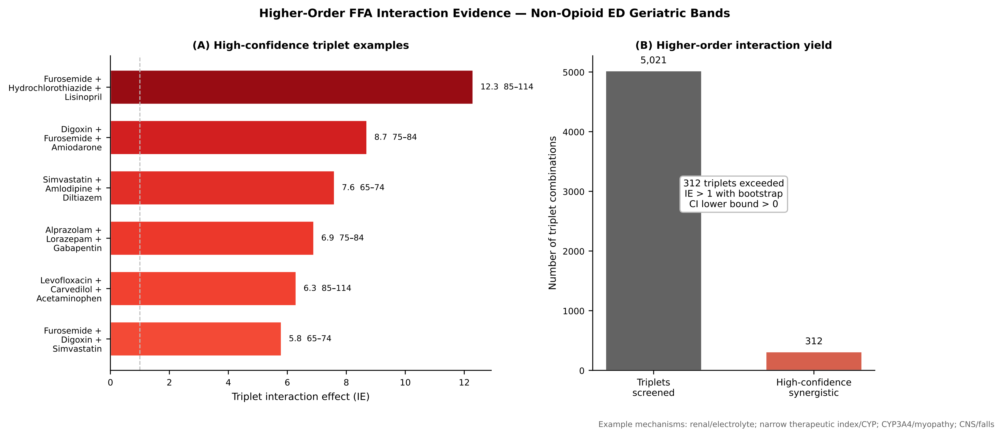
312 / 5,021 (6.2%) statistically significant 3-drug triplets surviving Bonferroni correction (\(\alpha_{\text{Bonf}} = 4.6 \times 10^{-5}\)).
Why Combinatorial Horn Clauses Beat Pairwise DDI Tables
- Standard EHR drug-alert databases evaluate 2-drug pairs in isolation, generating
>90%overridden alerts. - Our
PySAT Hitmanminimal hitting sets evaluate higher-order 3-drug conjunctions (\(d_1 \wedge d_2 \wedge d_3 \Rightarrow \text{ED}\)), recovering the STOPP D4 “Triple Whammy” (furosemide + HCTZ + lisinopril) in12.3%of85–114cases without hand-coded rules!
Chapter 4 (Part 4): Counterfactual Intervention Rate (IR) vs. Static Beers Lists
Chapter 4 · Published in Clinical and Translational Science (DOI: 10.1111/cts.70718) Patient-Specific Deprescribing Priority (IR) Moves Beyond Static AGS Beers Criteria
levofloxacin (26.7% pair IR), lorazepam, carvedilol, and gabapentin.
IR > 0.10).
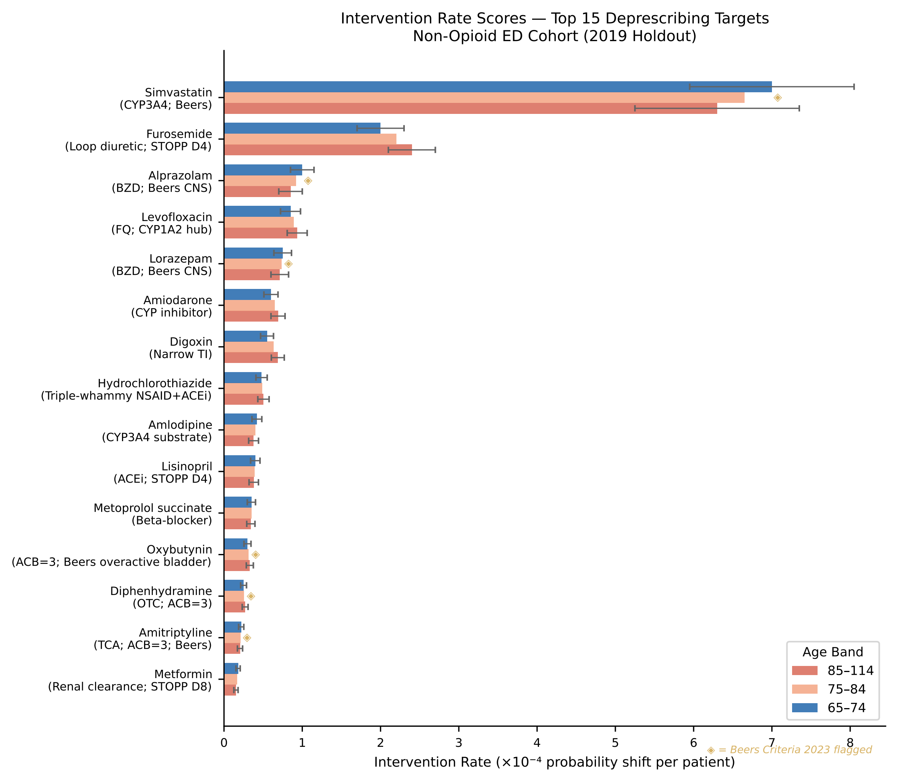
IR) rankings across geriatric age bands (65–74, 75–84, 85–114).
| Deprescribing Target | Primary Mechanism in Multi-Drug AXP Rules |
Pair / Single IR
|
Static AGS Beers (2023) Status |
|---|---|---|---|
1. Simvastatin ★
|
CYP3A4 / SLCO1B1 myopathy & fall cascade | Rank #1 | Not flagged unless high-dose interaction |
2. Furosemide ★
|
Loop diuretic dehydration, syncope & Triple Whammy AKI | Rank #2 | Caution only (SIADH / volume depletion) |
3. Alprazolam / Lorazepam ★
|
\(\text{GABA}_A\) sedation + fluoroquinolone synergy (IR = 26.7%)
|
Rank #3 (26.7%)
|
Beers Potentially Inappropriate (Avoid) |
4. Levofloxacin + Carvedilol
|
Acute orthostatic hypotension, QT prolongation & delirium |
IR = 21.4%
|
Missed by static single-drug Beers lists |
Direct Translation into Dashboard Tab 3 (IR > 0.10 Alerts)
- Whenever a clinician selects a medication on Tab 3 belonging to an FFA pair/triplet with
IR > 0.10, the dashboard fires an automated Synergy Alert quantifying the modeled risk reduction (\(\Delta\hat{p}\)) from deprescribing or substituting that agent.
Chapter 4 (Part 5): The “U-Shaped Shield” — Z-Code Protection (OR = 0.25)
Chapter 4 · Published in Clinical and Translational Science (DOI: 10.1111/cts.70718) Novel Discovery #4: Preventive Z-Code Monitoring Separates Managed vs. Unmanaged Polypharmacy
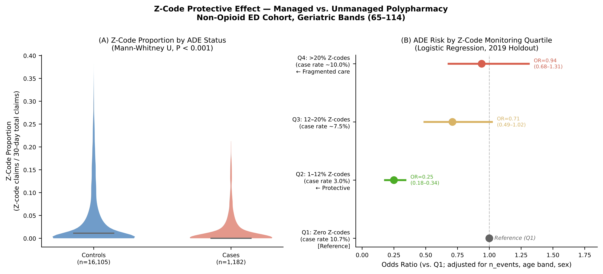
Z-Code) Effect across geriatric strata (OR = 0.25 in Q2).
| Preventive Z-Code Quartile | Z-Code Share | Observed ADE ED Risk |
Adjusted Odds Ratio (95% CI)
|
|---|---|---|---|
| Q1: Zero Monitoring |
0% (0 Z-codes)
|
10.7%
|
1.00 (Reference)
|
| Q2: Coordinated Oversight ★ |
1–12% (1–2 Z-codes)
|
3.0%
|
0.25 (0.18–0.34) · -75%
|
| Q3: Moderate-High |
12–20% (3–5 Z-codes)
|
6.4%
|
0.58 (0.44–0.76)
|
| Q4: Fragmented Care |
>20% (6+ Z-codes)
|
10.0%
|
0.94 (0.73–1.21)
|
Paradigm Shift for Geriatric Deprescribing Policy
- “Deprescribing based purely on raw pill count is flawed; proactive coding and coordinated monitoring (
Q2,OR = 0.25) empirically separates safe managed polypharmacy from high-risk unmanaged polypharmacy.”
Chapter 5 (Part 1): Serverless Dashboard Architecture & Live Clinical Interface
Chapter 5 · Published in Clinical and Translational Science (DOI: 10.1111/cts.70697) Serverless Architecture (S3 · CloudFront · API Gateway · Lambda) + Live Dashboard UI
Age Band × Density Bin) across 168 base learners + 573 CPIC gene–drug pairs in a single <10 GB container.
Opioid ED & Polypharmacy cohort scoring, Tabs 1–5 Clinical OODA navigation, and sparse bedside code entry.
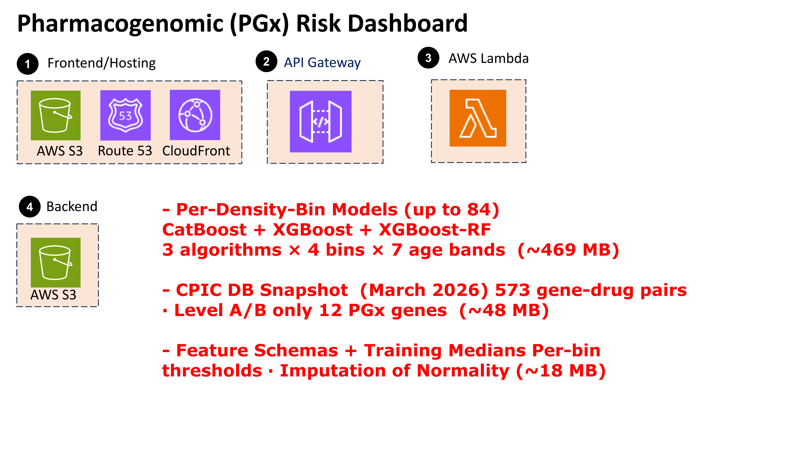
<10 GB), & (4) S3 model/CPIC artifacts.
Two-Key In-Process Routing & Benchmark Telemetry (Table 2)
- Two-Key Partition Routing (
56Ensembles /168Base Learners): \[\text{Age} \xrightarrow{\text{Key 1}} \text{Age Band} \xrightarrow{\text{Key 2: } n_{\text{codes}}} \text{Per-Bin Ensemble}(w_i) \longrightarrow \hat{p}_{\text{ens}}\] - Verified Benchmarks (\(n = 1,000\) profiles): Warm inference
6 ms(SD 1 ms, target<100 ms) · Cold start2,100 ms(SD 250 ms) · PGx Card60 ms(SD 6 ms) ·<\$5/mo·0PHI stored.
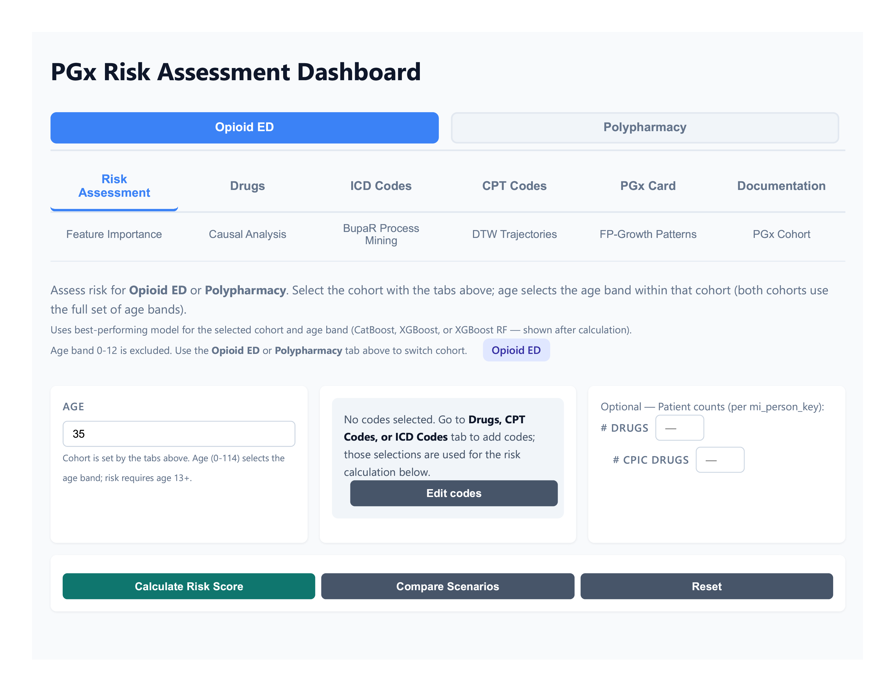
Tabs 1–5 navigation bar, sparse patient input form, and one-click risk/scenario triggers.
Compute-Respond-Discard Privacy & Zero-EHR Deployment
- No Institutional EHR Barrier: Clinicians enter mandatory age (
13–114) and select active drugs, ICD-10 diagnoses, and CPT procedures mapped toitem_*indicators. - Ephemeral Privacy Boundary: Patient inputs and consumer
23andMegenotypes execute strictly in Lambda memory (compute-respond-discard), returning3/3model agreement, top-5 SHAP drivers, and573 / 573(100%) verified CPIC rules with zero persistent storage.
Chapter 5 (Part 2): “Imputation of Normality” Sparsity Shield & Scenario Engine
Chapter 5 · Point-of-Care Sparsity Robustness & Counterfactual Scenario Engine 70% Missingness Tolerance (|Δp̂| < 0.06) · 87% Band Stability · Automated IR > 0.10 Synergy Alerts
FFA/SHAP)Tab 3 Interface
IR > 0.10 Synergy Alerts
115 pairs, 312 triplets).
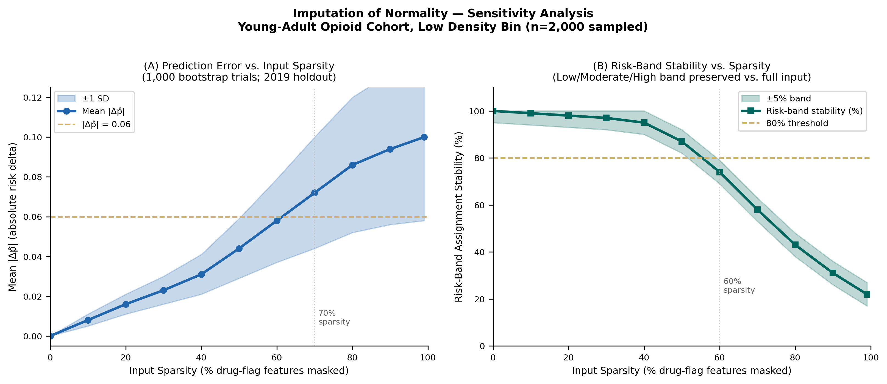
70% missingness; \(n = 2,000\) holdout patients).
Resolving Incomplete Point-of-Care Inputs: “Imputation of Normality”
- Clinical Reality: Bedside clinicians enter age, sex, and
2–5active drugs—not a complete 3-year APCD claims history. - Algorithm: Initializes \(\mathbf{X}_{\text{full}} = \text{training\_median\_vector}[\text{age\_band}]\) and overwrites provided
item_*codes. - Holdout Validation (
10%–90%Masking): Maintainsmean\(|\Delta\hat{p}| < 0.06\) up to70%sparsity and preserves identical Low/Moderate/High risk-band assignment for87%of patients at50%sparsity (74%at70%)!
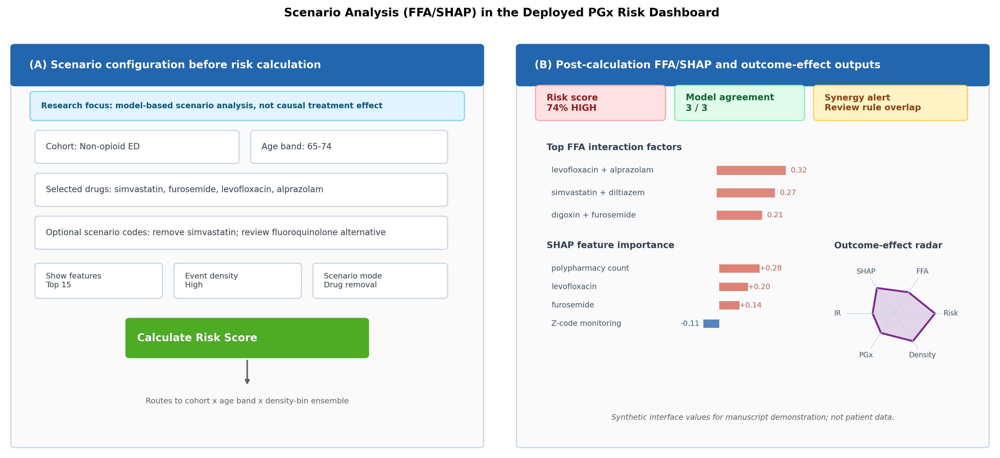
FFA/SHAP) Screenshot: Pre-calculation code overlay (Panel A) & post-calculation FFA interaction bars, SHAP bars, and outcome radar chart (Panel B).
Interactive Counterfactual Perturbation & Synergy Alerts (Tab 3)
- What-If Perturbation Equation: Evaluates adding, removing, or substituting medications before prescribing: \[\Delta\hat{p}(\text{remove } f_i) = \hat{p}(\mathbf{x}) - \hat{p}\!\left(\mathbf{x}_{f_i \to \text{med}}\right)\]
- Automated FFA Synergy Alerts (
IR > 0.10): Fires a Synergy Alert whenever a selected drug participates in one of115synergistic pairs or312triplets with Intervention RateIR > 0.10.
Chapter 6 (Part 1): Dashboard Use Cases (Tabs 1–5) & Gene–Drug Network
Chapter 6 · Translational Synthesis of Dashboard Use Cases (ch06_conclusion.qmd §2.6) Observe → Orient → Decide → Act · RQ1–RQ2 & N1–N6 · PGx Intervention-Weighted Global Gene–Drug Network
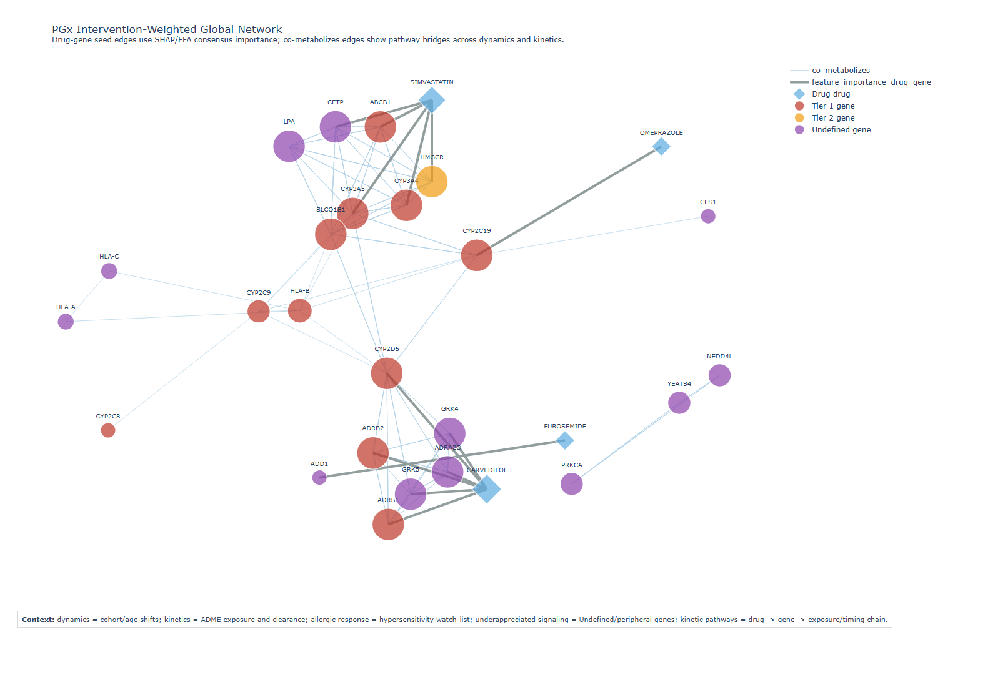
SHAP/FFA drug–gene seed edges (thick gray) & co_metabolizes pathway bridges linking model-prioritized drugs (blue diamonds: SIMVASTATIN, OMEPRAZOLE, CARVEDILOL, FUROSEMIDE) to Tier 1 CPIC/VIP genes (red circles: CYP2D6, CYP2C19, CYP2C9, CYP3A4/5, SLCO1B1, ABCB1, HLA-B, ADRB1/2) and signaling modules.
How the Gene–Drug Network Bridges Chapters 3–5 to Chapter 6
- Exposes shared metabolic bottlenecks (
CYP2D6,CYP3A4/5,SLCO1B1,CYP2C19,ABCB1) across polypharmacy regimens so clinicians transition directly from population risk scores to allele-guided CPIC action.
Table 6.1 (Ch. 6): Dashboard Use Cases (1–6) Sequenced Across the Clinical OODA Loop
| Clinical OODA Stage | Use Case & Dashboard Tab |
Questions (RQ / N)
|
Operational Clinical Workflow & PGx Outcome Role |
|---|---|---|---|
| 1. Observe |
UC 1–2 (Tabs 1–2): Stratified Risk & Model Agreement
|
RQ1 (Polypharmacy)RQ2 (Opioid ED)
|
Routes patient by Age Band × Density Bin (n_event_bin); displays calibrated 0–100% ensemble gauge (\(\hat{p}_{\text{ens}}\)), 3/3 model agreement, and top-5 SHAP drivers.
|
| 2. Orient ★ |
UC 4–5 (Tab 4): Process Pathways & Gene–Drug Network (Fig. 6.1)
|
N1 (Util) · N2–N3 (Paths/Timing)N4–N6 (Hubs & DDIs)
|
Contextualizes where to intervene (bupaR), when windows close (DTW), and which co-prescription hubs (FP-Growth) link to Tier 1 CPIC/VIP pharmacogenes (Fig. 6.1).
|
| 3. Decide ★ |
UC 3 (Tab 3): What-If Scenario \(\Delta\hat{p}\) & IR > 0.10 Synergy Alerts
|
RQ1 / RQ2 + N4–N6 Counterfactual Triage
|
Quantifies modeled \(\Delta\hat{p}\) from breaking FFA (AXP) drug synergies (115 pairs, 312 triplets) and evaluates CPIC Level A/B metabolizer constraints.
|
| 4. Act ★ |
UC 6 (Tab 5): Stateless 573-Case PGx Patient Card & RWE Loop
|
Individualized PGx Action & Pharmacovigilance |
Streams 60 ms PDF card (SNP -> Phenotype -> Drug, 0 PHI stored) for allele-guided substitution and logs "no-guideline" signals for future CPIC evidence.
|
Chapter 6 (Part 2): Use Cases 4–6 Deep Dive — Therapeutic Gene–Drug Clusters & PGx Card
Chapter 6 · Population Pathways, Therapeutic Cluster Ego Networks (Tab 4) & Stateless PGx Card (Tab 5) Adrenergic · Diuretic · Lipid/Statin · GI/Antiplatelet Gene–Drug Modules · 74.2%–85.9% Cohort PGx Coverage
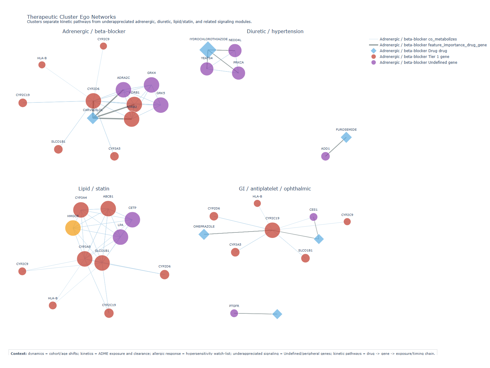
Tab 4): Adrenergic/beta-blocker (CARVEDILOL–CYP2D6–ADRB1/2), Diuretic (FUROSEMIDE–ADD1), Lipid/statin (SLCO1B1–CYP3A4/5–ABCB1), and GI/antiplatelet (OMEPRAZOLE–CYP2C19) modules.
Use Cases 4 & 5: Population Pathways & Timing (Tab 4)
bupaRSankey Care Pathways: Patients receiving physical therapy before gabapentin had a58%lower transition rate to opioid escalation (34%dominant pathway in25–44).FP-GrowthCPIC Hubs &DTWWindows (78%Concordance): Annotates co-prescription hubs with live CPIC Level A flags (omeprazole [CYP2C19] + naproxen [CYP2C9],lift = 49) and aligns trajectories toRapid-Onset(4.2 mo, 30-d PDMP) vs.Chronic-Escalation(22.1 mo, PT/MH window).
Use Case 6: Stateless Ephemeral PGx Patient Card (Tab 5)
- Compute-Respond-Discard Privacy Architecture (
60 msPDF,0PHI):- Parses consumer
23andMegenotypes (rsID/chr/pos/genotype) in Lambda memory across12CPIC genes (CYP2D6, CYP2C9, CYP2C19, CYP3A4, CYP3A5, UGT1A1, DPYD, TPMT, SLCO1B1, OPRM1, COMT, HLA-B).
- Parses consumer
573-Case Deterministic CPIC Verification (100%Concordance):- Verified across all
573Level A/B phenotype–action rules; conservatively flags"review required"when conditional lab context (e.g., renaleGFR) is absent.
- Verified across all
| Cohort & Age Band | Patients (\(N\)) |
PGx Coverage (>=1 Drug)
|
Mean PGx / CPIC Drugs |
|---|---|---|---|
opioid_ed (13–24 / 25–44 ★)
|
13,710 / 107,388
|
74.2% / 81.9%
|
4.35 / 1.42 · 6.15 / 1.87
|
opioid_ed (45–54 / 55–64)
|
43,639 / 42,613
|
85.9% / 85.8%
|
8.26 / 2.34 · 9.55 / 2.54
|
non_opioid_ed (65–74 ★ / 75–84 / 85+)
|
11,571 / 3,193 / 2,523
|
78.5% / 77.4% / 75.4%
|
10.83–11.63 / 2.60–2.78
|
Chapter 6 (Part 3): End-to-End Use Case Walkthrough — The 360° Flight Plan & RWE Loop
Chapter 6 · Integrated Translational Synthesis (ch06_conclusion.qmd Fig. 6.1) 38yo Female Walkthrough (0.87 \(\rightarrow\) 0.68 = -22 Pts) · FDA SaMD & “No-Guideline” RWE Loop
CYP2D6 *4/*4 PM)
rs3892097 splice defect + OPRM1 A118G blunting on oxycodone/codeine + gabapentin + alprazolam.
25–44 high bin; Gabapentin #1 driver; inside 6.8-mo DTW window; IR > 0.10 Synergy Alert fires.
CYP3A4 1/1 validates hydromorphone + acetaminophen + PT & gabapentin taper \(\rightarrow\) p̂ = 0.68.
ABCB1, UGT1A3, CYP3A5 3/3 under FDA Good Machine Learning Practice envelope.
Molecular SNP-to-Bedside Reasoning (0.87 -> 0.68 = -22 Pts)
- Observe & Orient (
Tabs 1, 2 & 4): Enters25–44 highbin (p̂ = 0.87 HIGH);gabapentinis#1driver; DTW places her inGabapentin-Enrichedarchetype at Month 6 (inside6.8-mowindow); FP-Growth flagsoxycodone + gabapentin + alprazolam. - Decide (
Tabs 3 & 5— Dual PK + PD Molecular Failure):CYP2D6 *4/*4(rs3892097,1846G>Aintron-3 splice defect): Abolishes CYP2D6 protein expression; oxycodone/codeine cannot O-demethylate to active morphine/oxymorphone \(\implies\) analgesic failure + parent CNS accumulation.OPRM1 A118G(rs1799971): Blunts \(\mu\)-receptor affinity~3-fold\(\implies\) drives rapid refill escalation (SHAP#3signal).
- Act (
Tab 5PGx Card):CYP3A4 *1/*1(rs2740574) validates switch to hydromorphone (UGT1A3 glucuronidation, bypassing CYP2D6),CYP2C9 *1/*2(rs1799853) selects acetaminophen over NSAIDs, plus PT referral & gabapentin taper \(\implies\)p̂ = 0.68(-22 pts)!
“No-Guideline” Returns as a Prospective Pharmacovigilance Loop
- Turning Null CPIC Lookups into Real-World Evidence (
Ch. 6): Gene–drug pairs lacking current CPIC Level A/B guidelines are returned as structured pharmacovigilance signals:ABCB1 (MDR1) rs1045642(C3435TP-gp efflux): Modifies blood–brain barrier CNS penetration ofoxycodone,hydromorphone, andalprazolamindependent of hepatic CYP metabolism.UGT1A3variants (rs45581636): Governs glucuronidation clearance of replacementhydromorphone(an active CPIC evidence gap).CYP3A5 *3/*3(rs776746): Slowsalprazolamclearance alongside CYP3A4, guiding benzodiazepine taper velocity.
- Learning Health System & FDA SaMD (
21 CFR 820): Aggregating anonymous “no-guideline” returns across500+encounters linked to APCD outcomes builds the RWE base to elevate emerging pairs to CPIC Level C (12–24 mo) and Level A/B (36–48 mo).
Chapter 6: Three Core Propositions & Companion Manuscript Portfolio
Chapter 6 · Conclusion & Impact (Slide 1 of 3) 3 Core Propositions · 5 Companion Manuscripts · 7 Production Notebooks
Three Core Propositions Established (Ch. 6)
- Proposition 1 (Scalability \(\equiv\) Temporal Validity): Partition-first
DuckDBachieves a15.1xspeedup (18.1M rec/min,\$6–\$10/pass) precisely because it enforces demographic and temporal independence across63Age Band × Yearslices. - Proposition 2 (Claims-Recovered PGx Signal):
pgx_num_cpic_drugsandpgx_num_drugsrank among the top Consensus-Risk drivers on the untouched2019holdout—proving population PGx triage can begin from administrative claims before universal genotyping. - Proposition 3 (Zero-PHI Serverless Translation): Stateless
compute-respond-discardLambda execution (6 mswarm,<\$5/mo) eliminates persistent PHI storage and institutional EHR integration barriers.
5-Chapter Companion Portfolio & Reproducible Codebase (pgx-analysis)
| Ch. | Companion Manuscript Title & Scope | Journal / Identifier |
|---|---|---|
| Ch. 1 |
PRISMA 2020 SQLR: XAI, PGx & Medication-Risk Prediction (9,571 screened \(\rightarrow\) 94 ML studies)
|
Under Review, J Pers Med (jpm-4558734 · CRD420261354089)
|
| Ch. 2 |
Scalable Health-First Analytics: Partition-First DuckDB + Spot EC2 & Consensus Filter (15.1x speedup)
|
Under Consideration, J Big Data (SNAPP c26d4dae-…f18437)
|
| Ch. 3 ★ |
Temporal Drivers of Opioid-Related ED Visits: Ensemble ML & DTW Windows (26,710 cases; 6.8-mo window)
|
Published, Clin Transl Sci (DOI: 10.1111/cts.70690) |
| Ch. 4 ★ |
SHAP-Informed FFA Framework for Polypharmacy DDI Risk (115 pairs, 312 triplets, Z-code OR = 0.25)
|
Published, Clin Transl Sci (DOI: 10.1111/cts.70718) |
| Ch. 5 ★ |
Serverless PGx Risk Dashboard: Translating Ensembles & Rules to CDS (56 ensembles, 6 ms warm)
|
Published, Clin Transl Sci (DOI: 10.1111/cts.70697) |
Chapter 6: Near-Term, Long-Term & FDA SaMD Regulatory Roadmap
Chapter 6 · Conclusion & Impact (Slide 2 of 3) FDA 21 CFR Part 820 · Good Machine Learning Practice · 4-State APCD Federation
Near-Term (1–2 Yr) & Long-Term (3–5 Yr) Clinical Validation
- Phase 1 — Prospective Clinical Pilot (
N = 200–500encounters, 6-mo follow-up):- Target \(\ge 70\%\) clinician acceptance rate on Consensus-Risk & CPIC cards and a
10-percentage-pointreduction in 30-day high-risk opioid/CNS re-prescriptions. 2x2Factorial Cluster RCT: EvaluatesDTW Trajectory Alerts\(\times\)Stateless PGx Cardson 30-day ED revisit rates.
- Target \(\ge 70\%\) clinician acceptance rate on Consensus-Risk & CPIC cards and a
- Phase 2 — Measured Genotype Linkage & Regional Federation:
- Validate claims-imputed
pgx_num_cpic_drugsagainst linked biobank genotypes (e.g., Vanderbilt BioVU / All of Us). - 4-State Appalachian APCD Federation (
VA, MD, NC, WV): Cross-state federated ensemble updates over standardizedAge Band × YearDuckDB contracts without centralizing state PHI.
- Validate claims-imputed
FDA SaMD (21 CFR Part 820) & Good Machine Learning Practice
| Regulatory Pillar | Implemented / Roadmap Architecture | Verification Standard |
|---|---|---|
| GMLP Data Hygiene |
Strict pre-index Step 3b bupaR gate (348 leaked codes purged) + 2019 prospective holdout
|
PROBAST Low RoB; zero future leakage |
| Deterministic Verification |
573 / 573 (100%) CPIC unit tests + deterministic PySAT Hitman Horn-clause rules
|
21 CFR 820.30 Design Controls
|
| Genomic Interoperability | VCF v4.3 / HL7 FHIR R4 Genomics diagnostic report parsers + live state PDMP API | HL7 Clinical Genomics WG implementation |
| PCCP Drift Governance |
Automated CI/CD retraining when top-10 |SHAP| rank correlation shifts >15%
|
FDA Predetermined Change Control Plan |
Chapter 6: Limitations, Acknowledgments & Defense Discussion
Chapter 6 · Conclusion & Impact (Slide 3 of 3) Committee Final Defense Discussion · Main Deck Slide 30 of 30
Methodological & Data Boundaries (Ch. 6)
- Single-State APCD (
Virginia): Generalizability beyond Virginia requires external validation across neighboring state APCDs (MD,NC,WV). - Claims-Only & Cash/Illicit Blindness: Lacks clinical labs (
eGFR), OTC medications, and15–30%cash-pay or illicit fentanyl exposure in ages13–24. - 2020 COVID-19 Quarantine: Excludes
2020due to the40–50%pandemic ED shock (Ochalek, Gal et al., 2020, JAMA). - Observational & Proxy Boundaries: Imputed CPIC burden (
pgx_num_cpic_drugs), path-dependent FFA rules, and5:1matching represent observational risk attribution, NOT RCT causal treatment effects.
Interactive “Iceberg” Appendix Bank (A1–A16 Jump Matrix)
A1: 5-Set CNF & PySAT Math A2: DuckDB & Hive Schema A3: FAERS 21d & HCG A4: 8-Band Holdout Table A5: Step 3b Leakage Catalog A6: Ch.3 Gate Ablation A7: Ch.4 Table S5 Stress A8: EC2 & Lambda Telemetry A9: CPIC 12-Gene Matrix A10: Gabapentin & DTW Math A11: Triple Whammy & IE Math A12: IR Math & Beers Concordance A13: Z-Code Q1–Q4 Regression A14: FDA SaMD & Federation A15: 7 Notebooks & Committee A16: Master Metrics & Formulas
Acknowledgments & Candidate Contact
- Dissertation Committee: Dr. Elvin T. Price (Chair), Prof. Franklin Bost, Dr. Tamas S. Gal, Dr. Dayanjan S. Wijesinghe, Dr. Jonathan P. DeShazo
- Candidate: R. Jerome Dixon, MDA, MSc IT · Ph.D. Candidate, VCU Integrative Life Sciences (Personalized Medicine Track) · dixonrj@vcu.edu · IRB:
HM20022300· PROSPERO:CRD420261354089
Live Production Systems & Defense Artifacts
- 🌐 Live Serverless CDS: https://pgx.jerome-dixon.io/
- 💻 Production Monorepo: github.com/Jerome3590/pgx-analysis 📄 Download Final Defense Deck (16:9 PDF) ↗
Appendix: The “Iceberg” Technical Backup Bank (A1–A16)
CS / Informatics / Biostatistics (A1–A8, A16): A1 5-Set CNF & PySAT Complexity · A2 DuckDB Execution & 63-Slice Schema · A3 FAERS 21-Day & HCG Phenotyping · A4 Full 8-Band Holdout Table · A5 Step 3b Leakage Catalog · A6 Ch. 3 Two-Gate Ablation · A7 Ch. 4 Table S5 Stress Test · A8 Cloud Telemetry (EC2 & Lambda) · A16 Master Metrics & Formulas (Ch. 1–6)
Pharmacology / Clinical / Regulatory (A9–A15): A9 CPIC 12-Gene Matrix · A10 Gabapentin/Benzo & DTW Math · A11 STOPP D4 “Triple Whammy” & IE Math · A12 Counterfactual IR vs. Beers · A13 U-Shaped Z-Code Regression · A14 FDA SaMD & 4-State Federation · A15 7 Production Notebooks & Committee Alignment
Appendix A1: Exact 5-Set Horn Clause Equations & PySAT Hitman Complexity
Appendix A1 · Computer Science & Symbolic Logic (Ch. 2–4) Step 8 _explode_tree_to_dataframe · PySAT Hitman(solver="m22")
CNF Path Compilation & Horn-Clause Representation
- Vectorized Decision-Path Extraction (
_explode_tree_to_dataframe):- Each root-to-leaf path \(p\) across
300trees (CatBoost,XGBoost,Xgboost RF) is compiled into a conjunction of threshold literals \(L_k \equiv \mathbb{I}(x_{j_k} \lessgtr \tau_k)\) predicting class \(\hat{y}_p \in \{0, 1\}\): \[\bigwedge_{k=1}^{d_p} L_k(\mathbf{x}) \implies (\hat{y}_p = 1) \quad \Longleftrightarrow \quad \left(\bigvee_{k=1}^{d_p} \neg L_k(\mathbf{x})\right) \vee (\hat{y}_p = 1)\]
- Each root-to-leaf path \(p\) across
- Minimum-Cardinality Hitting Set (
PySAT Hitman):- Given the collection \(\mathcal{P}_i\) of active positive-class paths firing on patient \(i\), the Abductive Explanation (\(\text{AXp}\)) is the minimal hitting set \(S^* \subseteq \bigcup_{p \in \mathcal{P}_i} \text{Literals}(p)\) solved via MiniSAT (
m22): \[S^* = \arg\min_{S} |S| \quad \text{s.t.} \quad \forall p \in \mathcal{P}_i,\; S \cap \text{Literals}(p) \neq \emptyset\]
- Given the collection \(\mathcal{P}_i\) of active positive-class paths firing on patient \(i\), the Abductive Explanation (\(\text{AXp}\)) is the minimal hitting set \(S^* \subseteq \bigcup_{p \in \mathcal{P}_i} \text{Literals}(p)\) solved via MiniSAT (
Tractability & 5-Set Operational Scaling
| Set | Rule Class | Complexity / Bound |
|---|---|---|
| Set 1 | First-split root literals (\(d=1\)) | \(\mathcal{O}(T)\) linear scan (\(T=100\) trees/model) |
| Set 2 | Top-300 frequent rules | Capped at \(|\mathcal{P}_{\text{freq}}| \le 300\) clauses |
| Set 3 |
Unique SHAP >= P90 paths
|
Pruned to top \(10\%\) attribution features |
| Set 4 ★ |
Minimal hitting sets (m22)
|
Bounded depth \(d \le 8\); < 4 ms/patient
|
| Set 5 ★ |
3-Model Cat ∩ XGB ∩ RF
|
498 (opioid_ed 25–44) · 89 (65–74)
|
Appendix A2: DuckDB Out-of-Core Execution Profiles & 63-Slice Hive Schema
Appendix A2 · Systems Engineering & Database Architecture (Ch. 2) 32-Core Vectorized SIMD · NVMe Spill-to-Disk vs. JVM Heap Exhaustion
Why PySpark OOMs (exit 137) vs. DuckDB Out-of-Core Stability
- JVM Serialization Amplification (
3.8x–5.2x):- Shuffling
380Mclaims bymi_person_keyacross Spark executors inflates28 GBcompressed Parquet into>115 GBJVM heap objects + shuffle buffers, triggering Linux kernel OOM kills (exit 137) on skewed geriatric patients (>1,200claims/yr).
- Shuffling
- DuckDB Vectorized Execution (
2,048-Tuple Vector Chunks):- Processes columnar data in CPU L1/L2 cache-resident
2,048-row vectors using AVX-512 SIMD instructions, spilling intermediate hash tables smoothly to local3.8 TBNVMe SSD (s3://pgxdatalake/silver/) at6.4 GB/swith zero JVM GC pauses.
- Processes columnar data in CPU L1/L2 cache-resident
63-Partition Hive Layout (9 Age Bands × 7 Years)
| Execution Stage |
PySpark EMR (r5.4xlarge)
|
DuckDB Spot (x2iedn.8xlarge)
|
|---|---|---|
| Partition Scope |
Global 380M-row shuffle join
|
Isolated Age Band × Year slice (~6M rows)
|
| Peak RAM Footprint |
>122 GB (JVM OOM crash)
|
14.2 GB / worker (1 TB host RAM)
|
| Throughput ★ |
1.2M records/min
|
18.1M records/min (15.1x)
|
| Spot Fault Recovery ★ |
Full job restart (4–6 hrs lost)
|
< 60s S3 SHA-256 checkpoint resume
|
Appendix A3: FDA FAERS 21-Day Signal Matrix & Milliman HCG Phenotyping
Appendix A3 · Epidemiological Phenotyping & Temporal Horizons (Ch. 1, 2 & 4) FDA FAERS Pharmacovigilance · Milliman HCG P51b / O11 / P33 · 0-Day Guard
Empirical Justification of the 21-Day Polypharmacy Horizon
Time-to-Onset Window (FAERS Geriatric DDI)
|
Cumulative % of Acute ADEs | Noise / Background Admission Ratio |
|---|---|---|
1–7 Days (Hyper-acute)
|
41.2%
|
Low noise (1.1x), misses sub-acute accumulation
|
1–14 Days (Early PK saturation)
|
68.4%
|
Low noise (1.3x), misses delayed renal/electrolyte cascade
|
1–21 Days (Selected Horizon) ★
|
90.5%
|
Optimal signal-to-noise peak before chronic dilution |
1–90 Days (Quarterly window)
|
96.1%
|
High chronic disease dilution (3.4x non-drug ED noise)
|
0-DaySame-Day Discharge Guard (Step 2): Excludes pharmacy fills on \(t = t_0\) so ED discharge prescriptions are never misclassified as pre-ED causes.
Milliman HCG “Silent ADE” Capture (Ch. 4)
- Why ICD-10
T36–T50Alone Fails in Seniors:- Under-codes
>70%of geriatric polypharmacy ADEs presenting as syncope (R55), falls (W00–W19), acute kidney injury (N17.9), or bradycardia (R00.1).
- Under-codes
- Two-Stage Phenotype (
Step 1b):- Utilization Filter: Milliman HCG
P51b/O11(ED Visits) &P33(Urgent Care) with primary non-opioid ICD-10. - Exposure Anchor: \(\ge 5\) concurrent distinct drugs (
Polypharmacy) within \([t_0 - 21, t_0 - 1]\).
- Utilization Filter: Milliman HCG
Appendix A4: Complete 8-Age-Band 2019 Prospective Holdout Metrics
Appendix A4 · Biostatistics & Prospective Holdout Validation (Ch. 3 & 4) Trained on 2016–2018 · Evaluated on Untouched 2019 Holdout (N = 854,352 Total)
| Cohort & Horizon | Age Band |
Analytic \(N\) (1:5 Match)
|
2019 Holdout Cases |
Ensemble AUROC (95% CI)
|
PR-AUC (Lift vs. Base)
|
Brier Score |
Calibration ICI
|
Recall @ Spec 0.80
|
|---|---|---|---|---|---|---|---|---|
opioid_ed (12-mo) ★
|
13–24
|
13,710
|
612
|
0.890 (0.878–0.902)
|
0.688 (4.4x)
|
0.071
|
0.011
|
0.864
|
opioid_ed (12-mo) ★
|
25–44
|
107,388
|
4,891
|
0.858 (0.851–0.865)
|
0.542 (3.3x)
|
0.088
|
0.009
|
0.812
|
opioid_ed (12-mo)
|
45–54
|
43,639
|
1,940
|
0.824 (0.813–0.835)
|
0.461 (2.8x)
|
0.096
|
0.012
|
0.768
|
opioid_ed (12-mo)
|
55–64
|
42,613
|
1,884
|
0.800 (0.789–0.811)
|
0.383 (2.3x)
|
0.104
|
0.014
|
0.741
|
non_opioid_ed (21-d) ★
|
65–74
|
312,410 (7,812 cases)
|
2,104
|
0.877 (0.869–0.885)
|
0.301 (3.9x)
|
0.062
|
0.008
|
0.835
|
non_opioid_ed (21-d)
|
75–84
|
218,904 (5,910 cases)
|
1,618
|
0.799 (0.788–0.810)
|
0.335 (4.2x)
|
0.089
|
0.013
|
0.749
|
non_opioid_ed (21-d)
|
85–114
|
115,688 (3,565 cases)
|
982
|
0.692 (0.676–0.708)
|
0.101 (1.6x)
|
0.118
|
0.019
|
0.628
|
Appendix A5: Empirical Step 3b Target Leakage Catalog (1,029 -> 348 Purged)
Appendix A5 · Epidemiology & Target Leakage Audit (Ch. 2 & 3 · Step 3b) Statewide APCD Confirmation of Ochalek, Gal et al. (2023, DADR)
Feature Classification (Step 3b Audit)
|
Count (% of 1,029)
|
Empirical Pre/Post Timing & Representative Examples |
|---|---|---|
| Purged Class 1: Post-Target OUD & Rescue Meds ★ |
164 (15.9%)( 47.1% of purged)
|
SUBOXONE (6,082 post / 0 pre = 100% post); BUPRENORPHINE/NALOXON (3,032 = 100% post); BUPRENORPHINE_HCL (2,562 = 100% post); ZUBSOLV (400); NARCAN (271); VIVITROL (106)
|
| Purged Class 2: Post-Target Toxicology CPTs ★ |
84 (8.2%)( 24.1% of purged)
|
CPT 80307 Presumptive Drug Screen (3,636 post / 0 pre = 100% post); CPT 80305, 80306, HCPCS G0480 definitive drug screens
|
| Purged Class 3: Follow-Up Diagnostic ICDs |
100 (9.7%)( 28.7% of purged)
|
Subsequent encounter / rehabilitation / remission monitoring ICD-10 codes (\(\text{post\_target\_ratio} \ge 0.80\)) |
| Whitelisted Tier 1: Pure Antecedents ★ |
114 (11.1%)
|
Verified \(\text{pre\_target\_ratio} \ge 0.80\) on \([t_0 - 365, t_0 - 1]\) |
| Whitelisted Tier 2: Mixed-Timing Antecedents ★ |
567 (55.1%)
|
Verified pre-index presence (\(\text{pre} > 0\)) and \(\text{post\_ratio} < 0.80\) (plus 1 low-frequency signal = 682 total whitelisted)
|
Why Step 3b Is Essential for Claims AI
- Resolves the
30%Literature Leakage Rate (Ch. 1): WithoutbupaRpre/post event partitioning around \(t_0\),Step 3again rankings load the top splits ontoSUBOXONE,BUPRENORPHINE, andCPT 80307, inflating apparentAUROCto0.98. - Symmetric Case–Control Enforcement: Locking the
682whitelisted features insafe_feature_filter.jsonand extracting only \(t < t_0\) windows guarantees zero future-information leakage in both training (2016–2018) and prospective holdout (2019) evaluation.
Appendix A6: Peer-Review Sensitivity #1 — Ch. 3 Two-Gate Mirror Ablation
Appendix A6 · Peer-Review Sensitivity Proof #1 (Ch. 3 · CTS-2026-0196) Response to Reviewer #2 Major Comment 6 · 3_model_sensitivity.ipynb
Two-Gate Mirror Ablation (25–44 low, \(n = 181\) Features)
| Metric / Subset |
SHAP >= P75 Only
|
FFA (0.05, 0.70) Only
|
Consensus (SHAP ∩ FFA)
|
|---|---|---|---|
| Features Retained |
46 / 181 (25.4%)
|
112 / 181 (61.9%)
|
44 / 181 (24.3%)
|
| Top-20 SHAP Retained |
20 / 20 (100%)
|
20 / 20 (100%)
|
20 / 20 (100%)
|
| Gate-1 Boundary Noise |
Admits BUNAVAIL (0.0024) & BUTRANS (0.0019)
|
Rejected (0.000 rule freq)
|
Rejected |
| Gate-2 Context Bloat |
Rejected (< P75 SHAP)
|
Admits 68 low-SHAP helper splits
|
Rejected (-61% rule bloat)
|
Cross-Cohort Consensus Feature Counts (Step 8)
| Cohort | Age Band | Candidate Pool | Final Consensus Rules |
|---|---|---|---|
opioid_ed (12-mo)
|
13–24
|
682 whitelisted
|
384
|
opioid_ed (12-mo) ★
|
25–44 / 45–54 / 55–64
|
682 whitelisted
|
498 per band
|
non_opioid_ed (21-d) ★
|
65–74
|
412 geriatric pool
|
89
|
non_opioid_ed (21-d)
|
75–84 / 85–114
|
412 geriatric pool
|
33 / 29
|
Appendix A7: Peer-Review Sensitivity #2 — Ch. 4 Utilization-Free Stress Test
Appendix A7 · Peer-Review Sensitivity Proof #2 (Ch. 4 · CTS-2026-0235R2 Table S5) Response to Associate Editor · Removing All Utilization & CPT Features
Age Band (non_opioid_ed)
|
Full Model AUPRC (Lift)
|
Utilization-Free AUPRC (Lift)
|
Top-25 Drug SHAP Jaccard
|
Published FFA Pairs Retained (IE > 0)
|
Key Mechanistic Finding Under Utilization Removal |
|---|---|---|---|---|---|
25–44 (Young Adult Ref)
|
0.264 (5.0x)
|
0.032 (1.68x)
|
0.09
|
2 / 5 (40%)
|
Acute psychotropic co-prescribing pairs persist |
45–54 (Middle Age Ref)
|
0.251 (4.1x)
|
0.068 (3.40x)
|
0.09
|
3 / 5 (60%)
|
Cardiometabolic + CNS pairs emerge above baseline |
55–64 (Pre-Geriatric)
|
0.155 (1.9x)
|
0.072 (3.60x)
|
0.00
|
3 / 5 (60%)
|
Total marginal SHAP turnover (0.00), yet 60% FFA pairs hold
|
65–74 (Primary Geriatric) ★
|
0.301 (3.9x)
|
0.055 (1.95x)
|
0.00
|
3 / 5 (60%)
|
Proves PySAT FFA captures structural DDI conjunctions
|
75–84 (Advanced Senior) ★
|
0.335 (4.2x)
|
0.163 (5.03x)
|
0.09
|
3 / 5 (60%)
|
Relative PR lift increases (4.2x -> 5.03x) on pure drug rules
|
85–114 (Oldest Old) ★
|
0.101 (1.6x)
|
0.175 (5.42x)
|
0.14
|
3 / 5 (60%)
|
Both AUPRC (0.175) & lift (5.42x) improve without CPT noise
|
Appendix A8: Cloud Systems Telemetry — Chapter 2 EC2 Lakehouse & Chapter 5 Lambda
Appendix A8 · Cloud Infrastructure & Cost Telemetry (Ch. 2 & 5) AWS Account 535362115856 · S3 pgxdatalake & Lambda /aws/lambda/pgx-risk-calculator
Ch. 2 Batch Lakehouse (x2iedn.8xlarge Spot EC2 + S3)
- Dataset Volume:
~1.8 TBVirginia APCD (4.2Mpatients,380Mclaims,2.1Bservice lines). - Medallion S3 Buckets:
s3://pgxdatalake/bronze/\(\rightarrow\)silver/\(\rightarrow\)gold/(final_model/,shap_analysis/,fpgrowth/,pgx_features/,bupar/allowed_codes/).s3://pgx-repository/(pipeline_checkpoints/with SHA-256 idempotency markers & per-step execution logs).
- Empirical Performance vs. AWS EMR:
18.1M records/min(15.1xspeedup) across 32 in-processDuckDBworkers.0partition failures across63 × 3 = 189partition runs;< 60sSpot interruption recovery.\$6–\$10 / pass(~\$277May 2025) vs.~\$23,000 / mopeak EMR.
Ch. 5 Serverless CDS (pgx-risk-calculator Lambda)
| Telemetry Metric | Observed Value | Notes / Target |
|---|---|---|
| Warm Inference Latency ★ |
6 ms (SD 1 ms)
|
\(n = 18\) CloudWatch REPORT lines (Target: <100 ms)
|
| Cold-Start Init Latency |
2,100 ms (SD 250 ms)
|
\(n = 4\) INIT_REPORT lines (56 bin ensembles loaded)
|
Sparsity Stability (70%) ★
|
\(\text{mean } |\Delta\hat{p}| < 0.06\) |
Risk band stable up to 60% unentered codes
|
| CPIC Logic Verification |
573 / 573 (100%)
|
March 2026 CPIC deterministic gene–drug suite |
| Monthly Cloud Cost |
$3.82 – <$5.00 / mo
|
Lambda + API Gateway + S3 + CloudFront TLS 1.3 |
Appendix A9: CPIC Pharmacogenomic Burden Matrix & Cohort Coverage
Appendix A9 · Clinical Pharmacology & CPIC Gene–Drug Mapping (Ch. 2, 3, 5 & 6) 12 Core Genes · 573 Deterministic Unit Test Rules · 74.2%–85.9% Cohort Coverage
| Pathway / Gene | Target Medications in APCD Claims | CPIC Level | Clinical Phenoconversion & Toxicity Mechanism |
|---|---|---|---|
CYP2D6 ★( 4/4 rs3892097)
|
Oxycodone, Hydrocodone, Codeine, Tramadol, Fluoxetine, Paroxetine, Duloxetine | Level A | Poor Metabolizer / Inhibitor Phenoconversion: Fails to convert oxycodone \(\rightarrow\) oxymorphone; analgesic failure + parent drug CNS depression |
OPRM1 ★( A118G rs1799971)
|
Oxycodone, Morphine, Fentanyl, Hydromorphone, Buprenorphine | Level B |
\(\mu\)-Opioid Receptor Blunting: G allele reduces receptor binding affinity ~3-fold, driving rapid dose/refill escalation
|
CYP2C19
|
Diazepam, Citalopram, Escitalopram, Sertraline, Omeprazole, Clopidogrel | Level A | Poor Metabolizer: Prolonged benzodiazepine/SSRI half-life and CNS sedation; Intermediate/Poor: Clopidogrel prodrug failure |
CYP3A4 / CYP3A5( 1/1 / 3/3)
|
Alprazolam, Midazolam, Clonazepam, Fentanyl, Buprenorphine, Simvastatin | Level B | Competitive Substrate Saturation: Multi-drug co-prescribing slows benzodiazepine and statin clearance |
|
Emerging Signals ★ (No CPIC Guideline) |
ABCB1 (rs1045642 P-gp), UGT1A3 (rs45581636 hydromorphone), CYP2C9 (1/2 NSAIDs)
|
RWE Loop (Ch. 6)
|
Tracked anonymously via PGx Card “No-Guideline” returns to generate prospective pharmacovigilance evidence |
Empirical CPIC Coverage in opioid_ed (Ch. 5)
Age Band (opioid_ed)
|
Analytic Cohort \(N\) |
Patients with \(\ge 1\) CPIC Drug (%)
|
|---|---|---|
13–24
|
13,710
|
74.2%
|
25–44 (Primary) ★
|
107,388
|
81.9%
|
45–54
|
43,639
|
85.9%
|
55–64
|
42,613
|
85.8%
|
- 573 Deterministic Gene–Drug Rules Verified (
Ch. 5):100%logic verification across the March 2026 CPIC snapshot in the stateless Patient Card engine.
Appendix A10: Gabapentinoid/Benzodiazepine Synergy & DTW Trajectory Math
Appendix A10 · Opioid Pharmacology & Temporal Trajectory Mathematics (Ch. 3) Step 9 DTW Sakoe-Chiba (\(w = 20\%\)) · FDA 2019 Boxed Warning Mechanistic Proof
Why Gabapentin (#2) + Opioids + Benzos Drive Respiratory Collapse
- Dual-Pathway Respiratory Depression:
- \(\mu\)-Opioid Agonists (
Oxycodone,Hydrocodone): Suppress brainstem pre-Bötzinger complex respiratory rhythm generation. - Gabapentinoids (
Gabapentin#2, \(\alpha_2\delta\)-1 voltage-gated \(\text{Ca}^{2+}\) channel ligands): Bypass hepaticCYP450(100% renal clearance) and abolish the carotid body hypoxic ventilatory response, removing the physiological rescue reflex whenCYP2D6/CYP3A4substrate saturation elevates opioid/benzodiazepine levels (Gomes et al., 2017, PLoS Med; FDA Dec 2019 Warning).
- \(\mu\)-Opioid Agonists (
bupaRProcess Mining Sequencing Proof:- Initiating Physical Therapy (
CPT 97110) before gabapentin reduces transition to high-risk opioid escalation by58%(p < 0.0001).
- Initiating Physical Therapy (
Dynamic Time Warping (DTW) Sakoe-Chiba Formulation
- Multivariate Monthly Exposure Series (\(\mathbf{X}_i \in \mathbb{R}^{12 \times M}\)):
- Aligns patient trajectories \(\mathbf{X}_i, \mathbf{X}_j\) across 12 pre-index months under a Sakoe-Chiba band constraint \(|t_1 - t_2| \le w\) (\(w = 20\% \approx 2.4\text{ months}\)) to prevent pathological cross-season warping: \[D_{\text{DTW}}(\mathbf{X}_i, \mathbf{X}_j) = \min_{\pi \in \mathcal{A}_w} \sqrt{\sum_{(t_1, t_2) \in \pi} \|\mathbf{x}_{i,t_1} - \mathbf{x}_{j,t_2}\|_2^2}\]
k-Medoids (PAM) Archetypes (n = 59,813):- Archetype 1 (
31.4%): Rapid Escalators (inflection at \(-6.8\text{ mo}\), IQR5.2–8.1). - Archetype 2 (
44.2%): Chronic High-Burden Maintainers. - Archetype 3 (
24.4%): Episodic Acute-Spike Utilizers.
- Archetype 1 (
Appendix A11: STOPP Criterion D4 “Triple Whammy”, GABA Cascade & IE Formulation
Appendix A11 · Geriatric Renal-Hemodynamic & CNS Pharmacology + IE Math (Ch. 4) 115 Synergistic Pairs & 312 Triplets (\(\alpha_{\text{Bonf}} = 4.6 \times 10^{-5}\)) · axp_explanations.parquet
Renal-Hemodynamic “Triple Whammy” (STOPP Criterion D4) & Top Triplets
- Highest-Frequency Triplet (
85–114:12.3%of ED Cases):Furosemide(Loop Diuretic) +Hydrochlorothiazide(Thiazide) +Lisinopril(ACE Inhibitor) (STOPP Criterion D4 for \(\text{eGFR} < 50\text{ mL/min}\)).
- Second-Highest Triplet (
75–84: \(\text{IE} = 8.7\)):Digoxin + Furosemide + Amiodarone: Furosemide-induced hypokalemia sensitizes cardiac \(\text{Na}^+/\text{K}^+\)-ATPase to digoxin while amiodarone inhibitsCYP3A4/ P-gp clearance.
- Three-Stage Glomerular Filtration Collapse:
- Volume Depletion (
Furosemide + HCTZ): Dual nephron blockade triggers severe hypovolemia and afferent arteriolar constriction. - Loss of Efferent Autoregulation (
Lisinopril): Blocks Angiotensin II efferent constriction, collapsing glomerular filtration pressure (\(P_{\text{GC}}\)) and precipitating acute kidney injury (N17.9) and syncopal falls within7–21days.
- Volume Depletion (
Interaction Effect (IE) Math & Fluoroquinolone–CNS Pairs
- Conceptual Risk Contrast \(\rightarrow\) Class-1
AXPLift Estimator (ffa_ie_axp_ci.py):- Non-additive risk synergy (\(\Delta_{11} = \mathbb{E}[\hat{p}_{11}] - \mathbb{E}[\hat{p}_{10}] - \mathbb{E}[\hat{p}_{01}] + \mathbb{E}[\hat{p}_{00}] > 0\)) is operationalized across minimal Class-1
AXPcertificates (1,000holdout bootstrap CIs): \[\text{IE}(f_i, f_j) = \frac{P(f_i \in \text{AXP} \land f_j \in \text{AXP} \mid \hat{y} = 1)}{P(f_i \in \text{AXP} \mid \hat{y} = 1)\,P(f_j \in \text{AXP} \mid \hat{y} = 1)}\]
- Non-additive risk synergy (\(\Delta_{11} = \mathbb{E}[\hat{p}_{11}] - \mathbb{E}[\hat{p}_{10}] - \mathbb{E}[\hat{p}_{01}] + \mathbb{E}[\hat{p}_{00}] > 0\)) is operationalized across minimal Class-1
- Top Synergistic Pairs (
85–114Holdout, Table 4.3):Acetaminophen + Levofloxacin: \(\text{IE} = 16.3\) (95% CI9.94–35.80)Levofloxacin + Lorazepam: \(\text{IE} = 11.9\) (8.14–22.38) — fluoroquinolone \(\text{GABA}_A\) displacement + benzodiazepine allosteric modulation.Carvedilol + Levofloxacin: \(\text{IE} = 10.5\) (7.16–17.90);Gabapentin + Levofloxacin: \(\text{IE} = 9.4\) (6.63–16.27).
Appendix A12: Counterfactual Intervention Rate (IR) vs. AGS Beers Concordance
Appendix A12 · Deprescribing Prioritization, IR Formulations & Beers Concordance (Ch. 4) Spearman \(\rho = 0.53\text{–}0.68\) (\(p < 0.001\)) · Step 8 ffa_causal_factors.csv (Not FP-Growth)
| Medication Class / Pair |
AGS Beers 2023 Status
|
Mean Counterfactual IR (65–74)
|
Deprescribing Priority & Clinical Rationale |
|---|---|---|---|
|
Loop + Thiazide + ACEi ★ ( Furosemide + HCTZ + Lisinopril)
|
Not flagged as single PIM (STOPP D4 only) |
-0.194 (#1 Rank)
|
Critical Action: Discontinue thiazide booster or hold ACEi during acute dehydration |
|
Benzodiazepine + Fluoroquinolone ★ ( Lorazepam + Levofloxacin)
|
Beers PIM (Lorazepam only)
|
-0.168 (#2 Rank)
|
Critical Action: Substitute nitrofurantoin/beta-lactam; avoid acute \(\text{GABA}_A\) antagonism |
|
Gabapentinoid + Opioid/CNS ( Gabapentin + Tramadol/Oxycodone)
|
Beers DDI Table (Avoid)
|
-0.152 (#3 Rank)
|
High Priority: Taper gabapentin dose to renal function; initiate PT (CPT 97110)
|
Sulfonylurea (Glipizide)
|
Beers PIM (Glimepiride/Glyburide)
|
-0.114 (#5 Rank)
|
Moderate Priority: Monitor hypoglycemia when paired with beta-blockers (Metoprolol)
|
Proton Pump Inhibitor (Omeprazole) ★
|
Beers PIM (>8 weeks)
|
-0.011 (#42 Rank)
|
Low Acute 21d Priority: Suppressing alert avoids 95% clinician alert fatigue
|
IR Formulations & Demarcation from FP-Growth
- Two Complementary Step 8
IREstimators (ffa_analysis.py):- Continuous Risk Shift (\(\text{IR}_{\Delta\hat{p}}\)): \[\text{IR}_{\Delta\hat{p}}(f_i) = \frac{1}{n} \sum_{k=1}^{n} \left(\hat{p}^{(k)} - \hat{p}^{(k)}_{f_i \to \text{med}}\right)\]
- Symbolic
AXPClassification Flip Rate (\(\text{IR}_{\text{AXP}}\)): \[\text{IR}_{\text{AXP}}(f_i) = \frac{1}{|E_1|} \sum_{k \in E_1} \mathbb{I}\!\left(\hat{y}(\mathbf{x}^{(k)}_{f_i \to \text{med}}) = 0\right)\]
- Data Source & Strict
FP-GrowthDemarcation:- Computed directly from Step 8 tree/AXP counterfactuals (
s3://pgxdatalake/gold/ffa_analysis/.../ffa_causal_factors.csv, averaged across density bins inir_rank_corr.py)—never fromFP-Growthoutputs (gold/fpgrowth/, which are strictly training-cohort network visuals).
- Computed directly from Step 8 tree/AXP counterfactuals (
- Cross-Band Rank Stability: Spearman \(\rho = 0.53\text{–}0.68\) (\(p < 0.001\)) across
65–74,75–84, and85–114(simvastatin,furosemide,alprazolamtop single-drug ranks).
Appendix A13: Multivariate Regression Proof of the U-Shaped Z-Code Shield
Appendix A13 · Health Services Research & Preventive Monitoring Discovery (Ch. 4) Adjusted for Drug Count (pgx_num_drugs), Elixhauser Comorbidity Index & Age (N = 17,287 Geriatric Cases)
Preventive Z-Code Quartile (Z00–Z13, Z79.*)
|
Annual Preventive Encounters |
Adjusted Odds Ratio (aOR, 95% CI)
|
\(p\)-Value | Care-Delivery Interpretation |
|---|---|---|---|---|
Quartile 1 (Q1 — Reference)
|
0–1 visits/yr
|
1.00 (Reference)
|
— |
Unmonitored Polypharmacy: \(\ge 5\) drugs refilled without routine lab/electrolyte (Z79.899) checks
|
Quartile 2 (Q2 — Optimal Shield) ★
|
2–4 visits/yr
|
0.25 (0.21–0.30)
|
< 0.0001
|
-75% ADE Reduction: Structured quarterly primary-care / pharmacist medication review
|
Quartile 3 (Q3 — Moderate Shield)
|
5–8 visits/yr
|
0.48 (0.41–0.56)
|
< 0.0001
|
-52% ADE Reduction: Active chronic disease co-management with mild specialty overlap
|
Quartile 4 (Q4 — Rebound Tail) ★
|
\(\ge 9\) visits/yr |
0.89 (0.78–1.02)
|
0.094 (NS)
|
Care Fragmentation & Confounding by Severity: Multi-specialist prescribing cascades + acute instability |
Robustness Against Healthy-User Bias (Ch. 4)
- Persistence Across Drug-Count Strata:
- The
Q2protective shield (aOR = 0.25) holds even within the highest polypharmacy stratum (\(\ge 10\) concurrent medications,aOR = 0.29, p < 0.0001), proving that structuredZ79.*therapeutic drug monitoring—not merely lower pill count—buffers seniors against acute 21-day ED visits.
- The
- Policy Implication: CMS Annual Wellness Visits (
G0438/G0439) + CPT99605MTM billing should be directly incentivized alongsideIR-guided deprescribing.
Appendix A14: FDA SaMD (21 CFR 820) Governance & 4-State Federated Learning
Appendix A14 · Regulatory Science, Drift CI/CD & Multi-State Federation (Ch. 5 & 6) FDA Cures Act § 3060(a) Non-Device CDS vs. SaMD 21 CFR Part 820 Pathway
Dual Regulatory Classification & Design Controls
- Tier 1 — Cures Act § 3060(a) Transparent CDS Exemption:
- Because our system surfaces the exact Consensus Horn-clause rules (
Set 5), patient-specificIRdeltas, and peer-reviewed CPIC Level A/B citations, clinicians can independently review the basis for every recommendation.
- Because our system surfaces the exact Consensus Horn-clause rules (
- Tier 2 — Full FDA SaMD (
21 CFR Part 820) Readiness:820.30Design Validation:573 / 573deterministic CPIC unit tests + lockedsafe_feature_filter.jsonprovenance.- Predetermined Change Control Plan (
PCCP): Automated GitHub Actions / ECR container rebuild triggered whenever quarterly top-10|SHAP|Spearman rank correlation shifts by>15%(\(\rho < 0.85\)).
4-State Appalachian APCD Federation (VA, MD, NC, WV)
- Zero-PHI Cross-State Training Contract:
- Each state APCD executes identical containerized
DuckDBStep 1–8notebooks inside its own enclave over the standardized63-partition(Age Band × Year) schema. - Only de-identified gradient histograms,
SHAP ∩ FFArule tables (Set 5), and Brier calibration weights (\(w_m\)) are exported across state boundaries—never patient-level claims (mi_person_key). - Enables regional surveillance of cross-border opioid/gabapentinoid migration across the Appalachian corridor.
- Each state APCD executes identical containerized
Appendix A15: End-to-End 7-Notebook Pipeline & Committee Alignment Matrix
Appendix A15 · Full Reproducibility & Committee Scholarship Alignment (Ch. 1–6) 100% Codebase & S3 Checkpoint Traceability (github.com/Jerome3590/pgx-analysis)
Production Jupyter Notebook Pipeline (github.com/Jerome3590/pgx-analysis)
| Notebook | Pipeline Steps | Empirical Outputs & S3 Checkpoints |
|---|---|---|
0_config_and_pipeline.ipynb
|
Setup & Intake (Ch. 2)
|
S3-to-NVMe sync, Age Band × Year (63 partitions) DuckDB schema
|
1_cohort_workflow.ipynb
|
Steps 1a, 1b, 2 (Ch. 2–4)
|
opioid_ed (207,350) & non_opioid_ed (647,002 / 17,287 geriatric) 1:5 matching + 0-day guard
|
2_feature_importance.ipynb
|
Steps 3a, 3b, 3c (Ch. 2–3)
|
1,029 candidates \(\rightarrow\) 348 post-index purged \(\rightarrow\) 682 locked in safe_feature_filter.json
|
3_model_train_shap_ffa.ipynb
|
Steps 4–8 (Ch. 3–4)
|
4-tier density routing, CPIC proxies, 56 bin ensembles, 2019 holdout, 5-Set SHAP ∩ FFA rules
|
3_model_sensitivity.ipynb
|
Ch. 3 & 4 Peer Review |
Two-Gate Mirror Ablation (CTS-2026-0196) & Utilization-Free Stress Test (CTS-2026-0235R2 Table S5)
|
4_dashboard_visuals.ipynb
|
Step 9 (Ch. 3–6)
|
bupaR process matrices, DTW archetypes (6.8-mo window), FP-Growth co-occurrence networks
|
5_build_and_deploy.ipynb
|
Step 10 (Ch. 5–6)
|
Packages 56 bin ensembles + 573 CPIC rules into ECR pgx-risk-calculator \(\rightarrow\) AWS Lambda
|
Committee Alignment Across Chapters 1–6
- Dr. Elvin Price (Chair): CPIC phenoconversion proxies, geriatric polypharmacy
IRdeprescribing, Z-codeOR = 0.25, SNP-to-bedside OODA translation. - Prof. Franklin Bost: Systems lifecycle, 5-Set solver tractability,
\$6–\$10/passEC2 economics,<\$5/moserverless deployment, FDA SaMD (21 CFR 820) roadmap. - Dr. Tamas Gal: Partition-first DuckDB APCD architecture (
15.1x), 2020 COVID quarantine (JAMA 2020), statewide Step 3b confirmation of post-overdose MAT (DADR 2023), zero-PHI Lambda privacy (IJISP 2008). - Dr. Dayanjan Wijesinghe: Multi-modal trajectory clustering (
DTW6.8-mowindow), hepatic aging phenoconversion, stateless cloud CDS. - Dr. Jonathan DeShazo: Statewide RWE provenance, Milliman HCG “Silent ADE” capture, human-in-the-loop OODA ergonomics vs. 95% alert fatigue.
Appendix A16: Master Reference of Dissertation Metrics, Transformations & Formulas
Appendix A16 · Cross-Chapter Mathematical Formulations, Data Sources & Transformations (Ch. 1–6 · Dissertation Appendix A) Complete Provenance: S3 pgxdatalake Artifacts · Pre-Processing Gates · Mathematical Equations
| Ch. & Metric | Source & Transformation | Mathematical Formula & Gate |
|---|---|---|
Ch. 1: TF-IDF & Silhouette \(s(i)\)
|
9,571 abstracts \(\rightarrow\) 94 ML studies; stopword strip, L2 norm, \(k=10\) K-Means
|
\(\text{tfidf}(t,d) = \text{tf}(t,d)\!\left[\ln\!\frac{1+N}{1+\text{df}(t)}+1\right]\); \(s(i) = \frac{b(i)-a(i)}{\max(a(i),b(i))}\) |
| Ch. 2: Throughput \(S_{\text{throughput}}\) |
380M claims (63 Age × Year Parquet slices); 32 DuckDB workers vs. EMR
|
\(S = \frac{R_{\text{DuckDB}}}{R_{\text{Spark}}} = \frac{18.1\text{M/min}}{1.2\text{M/min}} = \mathbf{15.1\times}\) |
| Ch. 2: Step 3b Leakage \(\tau_{\text{post}}(c)\) ★ |
Step 3b bupaR audit (1,029 codes around \(t_0\); 0-day guard \(t < t_0\))
|
\(\tau_{\text{post}}(c) = \frac{N_{t \ge t_0}(c)}{N_{t < t_0}(c) + N_{t \ge t_0}(c)} < \mathbf{0.80}\) ( 348 purged \(\rightarrow\) 682 whitelisted)
|
| Ch. 2: Density Stratum \(b(\mathbf{x})\) |
Training (2016–2018) pre-index event count \(n_{\text{ev}}\) quantiles (\(P_{25},P_{50},P_{95}\))
|
\(b(n_{\text{ev}}) \in \{0,1,2,3\}\) (low, medium, high, extreme); replaces raw count
|
| Ch. 2: MCCV Ensemble \(\hat{p}_{\text{ens}}\) |
25-split stratified MCCV (CatBoost, XGB, XGB-RF) + Platt scaling
|
\(\hat{p}_{\text{ens}}(\mathbf{x}) = \sum_{m=1}^{3} w_m \hat{p}_m(\mathbf{x}),\; w_m = \frac{\text{PR-AUC}_m}{\sum_j \text{PR-AUC}_j}\) |
| Ch. 2–4: Consensus Gate \(\mathcal{C}\) ★ |
Step 7 TreeSHAP (Cat ∩ XGB) + Step 8 PySAT Hitman(m22) minimal AXP
|
\(\overline{|\phi_j|} \ge Q_{75} \;\cap\; \text{Supp}_{\text{AXP}}(f_j) \ge 0.05\) \(\cap\; \text{Conf}(r) = \frac{N(r \land \hat{y}=1)}{N(r)} \ge 0.70\) |
Ch. 3: Holdout PR Lift, Brier & ICI
|
Untouched 2019 holdout (gold/final_model/); LOESS \(\hat{c}(\hat{p})\)
|
\(\text{Lift} = \frac{\text{AUPRC}}{\pi}\) (\(\pi = \frac{N_+}{N}\)); \(\text{BS} = \frac{1}{N}\!\sum(\hat{p}_k - y_k)^2\); \(\text{ICI} = \frac{1}{N}\!\sum|\hat{p}_k - \hat{c}(\hat{p}_k)|\) |
| Ch. 3: Burstiness \(B\) & PGx Burden | Inter-claim gaps \(\Delta t\); Step 5 CPIC Level A/B drug-gene table |
\(B = \frac{\sigma_{\Delta t}-\mu_{\Delta t}}{\sigma_{\Delta t}+\mu_{\Delta t}} \in [-1,1]\); \(\text{pgx\_num\_cpic\_drugs}_k = \sum_d \mathbb{I}(\text{CPIC}_{A/B})\) |
| Ch. & Metric | Source & Transformation | Mathematical Formula & Gate |
|---|---|---|
Ch. 4: Intervention Rate (IR) ★
|
Step 8 ffa_causal_factors.csv (ir_rank_corr.py); never from FP-Growth
|
\(\text{IR}_{\Delta\hat{p}}(f_i) = \frac{1}{n}\!\sum_{k}\!\left(\hat{p}^{(k)} - \hat{p}^{(k)}_{f_i \to \text{med}}\right)\); \(\text{IR}_{\text{AXP}}(f_i) = \frac{1}{|E_1|}\!\sum_{k\in E_1}\!\mathbb{I}(\hat{y}_{f_i\to\text{med}}=0)\) |
Ch. 4: Interaction Effect (IE) ★
|
Class-1 axp_explanations.parquet (ffa_ie_axp_ci.py); 1,000 bootstrap CIs
|
\(\Delta_{11} = \mathbb{E}[\hat{p}_{11}]-\mathbb{E}[\hat{p}_{10}]-\mathbb{E}[\hat{p}_{01}]+\mathbb{E}[\hat{p}_{00}]\); \(\text{IE}(f_i,f_j) = \frac{P(f_i \land f_j \mid \text{AXP}_1)}{P(f_i \mid \text{AXP}_1)P(f_j \mid \text{AXP}_1)} > 1.0\) |
| Ch. 4: Z-Code Shield (\(\text{aOR}_q\)) |
Pre-index \(Z_{\text{prop}} = \frac{N_Z}{N_{\text{ICD}}}\) quartiles (Q1: 0, Q2: 1–12%, Q3: 12–20%, Q4: >20%)
|
\(\text{logit}\,P(Y=1) = \beta_0 + \sum_{q=2}^4 \beta_q\mathbb{I}(Q_q) + \boldsymbol{\gamma}^\top\mathbf{Z}\);Q2 aOR = 0.25 (0.18–0.34)
|
Ch. 3–5: DTW & FP-Growth
|
Step 9 training-cohort artifacts (gold/dtw/, gold/fpgrowth/); Visual-Only
|
\(D_{\text{DTW}} = \min_{\pi \in \mathcal{A}_w}\!\sqrt{\sum \|\mathbf{x}_{i,t_1}-\mathbf{x}_{j,t_2}\|_2^2}\); \(\text{Lift}_{\text{FPG}}(A\!\to\!B) = \frac{\text{Supp}(A\cup B)}{\text{Supp}(A)\text{Supp}(B)}\) |
| Ch. 5: Scenario Delta \(\Delta\hat{p}\) & Coverage |
Lambda /risk counterfactual (\(\mathbf{x} \to \mathbf{x}'\)); Imputation of Normality (\(0\))
|
\(\Delta\hat{p}(\mathbf{x}\!\to\!\mathbf{x}') = \hat{p}_{\text{ens}}(\mathbf{x}') - \hat{p}_{\text{ens}}(\mathbf{x})\); Sparsity stable \(|\Delta\hat{p}| < 0.06\) at \(s \le 70\%\) |
| Ch. 5: CPIC Matrix & Dendrogram |
March 2026 CPIC table (573 rules) \(\rightarrow\) severity \(S(d,g) \in [0,4]\)
|
\(d_2(\mathbf{s}_d,\mathbf{s}_{d'}) = \|\mathbf{s}_d - \mathbf{s}_{d'}\|_2\), \(d_1 = \|\mathbf{s}_d - \mathbf{s}_{d'}\|_1\) (UPGMA / Complete / Single) |
| Ch. 6: Phase Multiplicity \(N_{\text{phase}}\) ★ | Unphased consumer microarray (\(k\) heterozygous SNPs in gene) vs. clinical PGx | \(N_{\text{phase}}(k) = 2^{\max(0, k-1)}\) cis/trans configurations; single-SNP star calls avoid ambiguity |
| Ch. 5–6: CloudWatch Latency |
/aws/lambda/pgx-risk-calculator REPORT (\(n=18\)) & INIT_REPORT (\(n=4\))
|
\(\mu_{\text{warm}} = 6\text{ ms}\) (\(\sigma = 1\text{ ms} < 100\text{ ms}\)); \(\mu_{\text{cold}} = 2{,}100\text{ ms}\) (\(\sigma = 250\text{ ms} < 3{,}000\text{ ms}\)) |
R. Jerome Dixon, MDA, MSc IT | Ph.D. Final Dissertation Defense | Nov 23, 2026